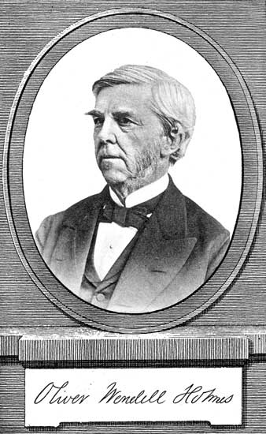
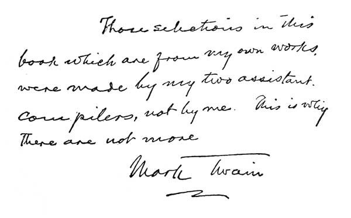

Title: Little Masterpieces of American Wit and Humor, Volume I
Editor: Thomas L. Masson
Release date: April 21, 2007 [eBook #21196]
Most recently updated: January 2, 2021
Language: English
Other information and formats: www.gutenberg.org/ebooks/21196
Credits: Produced by Bryan Ness, Janet Blenkinship and the Online
Distributed Proofreading Team at https://www.pgdp.net

| Washington Irving | Oliver Wendell Holmes | |
| Benjamin Franklin | "Josh Billings" | |
| "Mark Twain" | Charles Dudley Warner | |
| James T. Fields | Henry Ward Beecher | |
| and others | ||
Copyright, 1903, by
Doubleday, Page & Company
Published, October, 1903

This anthology of American Humor represents a process of selection that has been going on for more than fifteen years, and in giving it to the public it is perhaps well that the Editor should precede it with a few words of explanation as to its meaning and scope.
Not only all that is fairly representative of the work of our American humorists, from Washington Irving to "Mr. Dooley," has been gathered together, but also much that is merely fugitive and anecdotal. Thus, in many instances literary finish has been ignored in order that certain characteristic and purely American bits should have their place. The Editor is not unmindful of the danger of this plan. For where there is such a countless number of witticisms (so-called) as are constantly coming to the surface, and where so many of them are worthless, it must always take a rare discrimination to detect the genuine from the false. This difficulty is greatly increased by the difference of opinion that exists, even among the elect, with regard to the merit of particular jokes. To paraphrase an old adage, what is one man's laughter may be another man's dirge. The Editor desires to make it plain, however, that the responsibility in this particular instance is entirely his own. He has made his selections without consulting any one, knowing that if a consultation of experts should attempt to decide about the contents of a volume of American humor, no volume would ever be published.
The reader will doubtless recognize, in this anthology, many old friends. He may also be conscious of omissions. These omissions are due either to the restrictions of publishers, or the impossibility of obtaining original copies, or the limited space.
Acknowledgments are made herewith to the following publishers, who have kindly consented to allow the reproduction of the material designated.
F. A. Stokes & Company, New York: "A Rhyme for Priscilla," F. D. Sherman; "The Bohemians of Boston," Gelett Burgess; "A Kiss in the Rain," "Bessie Brown, M. D.," S. M. Peck.
Dodd, Mead & Company, New York: Four Extracts, E. W. Townsend ("Chimmie Fadden").
Bowen-Merrill Company, Indianapolis: "The Elf Child," "A Liz-Town Humorist," James Whitcomb Riley.
Lee & Shepard, Boston: "The Meeting of the Clabberhuses," "A Philosopher," "The Ideal Husband to His Wife," "The Prayer of Cyrus Brown," "A Modern Martyrdom," S. W. Foss; "After the Funeral," "What He Wanted It For," J. M. Bailey.
Bacheller, Johnson & Bacheller, New York: "The Composite Ghost," Marion Couthouy Smith.
D. Appleton & Company, New York: "Illustrated Newspapers," "Tushmaker's Tooth-puller," G. H. Derby ("John Phœnix").
T. B. Peterson & Company, Philadelphia: "Hans Breitmann's Party," "Ballad," C. G. Leland.
Century Company, New York: "Miss Malony on the Chinese Question," Mary Mapes Dodge; "The Origin of the Banjo," Irwin Russell; "The Walloping Window-Blind," Charles E. Carryl; "The Patriotic Tourist," "What's in a Name?" "'Tis Ever Thus," R. K. Munkittrick.
Forbes & Company, Chicago: "If I Should Die To-Night," "The Pessimist," Ben King.
J. S. Ogilvie & Company, New York: Three Short Extracts, C. B. Lewis ("Mr. Bowser").
The Chelsea Company, New York: "The Society Reporter's Christmas," "The Dying Gag," James L. Ford.
Keppler & Schwarzmann, New York: "Love Letters of Smith," H. C. Bunner.
Small, Maynard & Company, Boston: "On Gold-Seeking," "On Expert Testimony," F. P. Dunne ("Mr. Dooley"); "Tale of the Kennebec Mariner," "Grampy Sings a Song," "Cure for Homesickness," Holman F. Day.
Belford, Clarke & Company, Chicago: "A Fatal Thirst," "On Cyclones," Bill Nye.
Duquesne Distributing Company, Harmanville, Pennsylvania: "In Society," William J. Kountz, Jr. (from the bound edition of "Billy Baxter's Letters").
R. H. Russell, New York: Nonsense Verses—"Impetuous Samuel," "Misfortunes Never Come Singly," "Aunt Eliza," "Susan"; "The City as a Summer Resort," "Avarice and Generosity," "Work and Sport," "Home Life of Geniuses," F. P. Dunne ("Mr. Dooley"); "My Angeline," Harry B. Smith.
H. S. Stone & Company, Chicago: "The Preacher Who Flew His Kite." "The Fable of the Caddy," "The Two Mandolin Players," George Ade.
American Publishing Company, Hartford: "A Pleasure Excursion," "An Unmarried Female," Marietta Holley; "Colonel Sellers," "Mark Twain."
G. P. Putnam's Sons, New York: "Living in the Country," "A Glass of Water," "A Family Horse," F. S. Cozzens.
George Dillingham, New York: "Natral and Unnatral Aristocrats," "To Correspondents," "The Bumblebee," "Josh Billings"; "Among the Spirits," "The Shakers," "A. W. to His Wife," "Artemus Ward and the Prince of Wales," "A Visit to Brigham Young," "The Tower of London," "One of Mr. Ward's Business Letters," "On 'Forts,'" Artemus Ward; "At the Musicale," "At the Races," Geo. V. Hobart ("John Henry").
Thompson & Thomas, Chicago: "How to Hunt the Fox," Bill Nye.
Little, Brown & Company, Boston: "Street Scenes in Washington," Louisa May Alcott.
E. H. Bacon & Company, Boston: "A Boston Lullaby," James Jeffrey Roche.
Houghton, Mifflin & Company, Boston: "My Aunt," "The Wonderful One-hoss Shay," "Foreign Correspondence," "Music-Pounding" (extract), "The Ballad of the Oysterman," "Dislikes" (short extract), "The Height of the Ridiculous," "An Aphorism and a Lecture," O. W. Holmes; "The Yankee Recruit," "What Mr. Robinson Thinks," "The Courtin'," "A Letter from Mr. Ezekiel Bigelow," "Without and Within," J. R. Lowell; "Five Lives," "Eve's Daughter," E. R. Sill; "The Owl-Critic," "The Alarmed Skipper," James T. Fields; "My Summer in a Garden," "Plumbers," "How I Killed a Bear," C. D. Warner; "Little Breeches," John Hay; "The Stammering Wife," "Coquette," "My Familiar," "Early Rising," J. G. Saxe; "The Diamond Wedding," E. C. Stedman; "Melons," "Society Upon the Stanislaus," "The Heathen Chinee," "To the Pliocene Skull," Bret Harte; "The Total Depravity of Inanimate Things," K. K. C. Walker; "Palabras Grandiosas," Bayard Taylor; "Mrs. Johnson," William Dean Howells; "A Plea for Humor," Agnes Repplier; "The Minister's Wooing," Harriet Beecher Stowe.
In addition, the Editor desires to make his personal acknowledgments to the following authors: F. P. Dunne, Mary Mapes Dodge, Gelett Burgess, R. K. Munkittrick, E. W. Townsend, F. D. Sherman.
For such small paragraphs, anecdotes and witticisms as have been used in these volumes, acknowledgment is hereby made to the following newspapers and periodicals:
Chicago Record, Boston Globe, Texas Siftings, New Orleans Times Democrat, Providence Journal, New York Evening Sun, Atlanta Constitution, Macon Telegraph, New Haven Register, Chicago Times, Analostan Magazine, Harper's Bazaar, Florida Citizen, Saturday Evening Post, Chicago Times Herald, Washington Post, Cleveland Plain Dealer, New York Tribune, Chicago Tribune, Pittsburg Bulletin, Philadelphia Ledger, Youth's Companion, Harper's Magazine, Duluth Evening Herald, Boston Medical and Surgical Journal, Washington Times, Rochester Budget, Bangor News, Boston Herald, Pittsburg Dispatch, Christian Advocate, Troy Times, Boston Beacon, New Haven News, New York Herald, Philadelphia Call, Philadelphia News, Erie Dispatch, Town Topics, Buffalo Courier, Life, San Francisco Wave, Boston Home Journal, Puck, Washington Hatchet, Detroit Free Press, Babyhood, Philadelphia Press, Judge, New York Sun, Minneapolis Journal, San Francisco Argonaut, St. Louis Sunday Globe, Atlanta Constitution, Buffalo Courier, New York Weekly, Starlight Messenger (St Peter, Minn.).
| WASHINGTON IRVING | |
|---|---|
| Wouter Van Twiller | 1 |
| Wilhelmus Kieft | 8 |
| Peter Stuyvesant | 13 |
| Antony Van Corlear | 15 |
| General Van Poffenburgh | 18 |
| BENJAMIN FRANKLIN | |
| Maxims | 21 |
| Model of a Letter of Recommendation of a | |
| Person You Are Unacquainted with | 21 |
| Epitaph for Himself | 22 |
| WILLIAM ALLEN BUTLER | |
| Nothing to Wear | 24 |
| HENRY WARD BEECHER | |
| Deacon Marble | 39 |
| The Deacon's Trout | 41 |
| The Dog Noble and the Empty Hole | 43 |
| ALBERT GORTON GREENE | |
| Old Grimes | 45 |
| OLIVER WENDELL HOLMES | |
| My Aunt | 49 |
| The Deacon's Masterpiece; or, the Wonderful | |
| "One-hoss Shay" | 63 |
| Foreign Correspondence | 106 |
| Music-Pounding | 109 |
| The Ballad of the Oysterman | 142 |
| NATHANIEL PARKER WILLIS | |
| Miss Albina McLush | 51 |
| Love in a Cottage | 125 |
| WILLIAM PITT PALMER | |
| A Smack in School | 56 |
| B. P. SHILLABER ("Mrs. Partington") | |
| Fancy Diseases | 58 |
| Bailed Out | 59 |
| Seeking a Comet | 59 |
| Going to California | 60 |
| Mrs. Partington in Court | 61 |
| EDWARD ROWLAND SILL | |
| Five Lives | 68 |
| JAMES T. FIELDS | |
| The Owl-Critic | 70 |
| The Alarmed Skipper | 104 |
| JOHN HAY | |
| Little Breeches | 74 |
| HENRY W. SHAW ("Josh Billings") | |
| Natral and Unnatral Aristokrats | 77 |
| JAMES RUSSELL LOWELL | |
| The Yankee Recruit | 81 |
| What Mr. Robinson Thinks | 170 |
| CHARLES DUDLEY WARNER | |
| My Summer in a Garden | 90 |
| FREDERICK S. COZZENS | |
| Living in the Country | 111 |
| CHARLES GODFREY LELAND | |
| Hans Breitmann's Party | 127 |
| FRANCES M. WHICHER | |
| Tim Crane and the Widow | 129 |
| JOHN GODFREY SAXE | |
| The Stammering Wife | 135 |
| ANDREW V. KELLEY ("Parmenas Mix") | |
| He Came to Pay | 139 |
| MARIETTA HOLLEY | |
| A Pleasure Exertion | 144 |
| EDMUND CLARENCE STEDMAN | |
| The Diamond Wedding | 162 |
| MISCELLANEOUS | |
| Why He Left | 23 |
| A Boy's Essay on Girls | 38 |
| Identified | 47 |
| One Better | 48 |
| A Rendition | 57 |
| A Cause for Thanks | 73 |
| Crowded | 103 |
| The Wedding Journey | 105 |
| A Case of Conscience | 126 |
| He Rose to the Occasion | 136 |
| Polite | 137 |
| Lost, Strayed or Stolen | 138 |
| A Gentle Complaint | 141 |
| Music by the Choir | 173 |
| MARK TWAIN | |
| The Notorious Jumping Frog of Calveras County | 177 |
It was in the year of our Lord 1629 that Mynheer Wouter Van Twiller was appointed Governor of the province of Nieuw Nederlandts, under the commission and control of their High Mightinesses the Lords States General of the United Netherlands, and the privileged West India Company.
This renowned old gentleman arrived at New Amsterdam in the merry month of June, the sweetest month in all the year; when dan Apollo seems to dance up the transparent firmament—when the robin, the thrush, and a thousand other wanton songsters make the woods to resound with amorous ditties, and the luxurious little bob-lincon revels among the clover blossoms of the meadows—all which happy coincidences persuaded the old dames of New Amsterdam, who were skilled in the art of foretelling events, that this was to be a happy and prosperous administration.
The renowned Wouter (or Walter) Van Twiller was descended from a long line of Dutch burgomasters, who had successively dozed away their lives and grown fat upon the bench of magistracy in Rotterdam, and who had comported themselves with such singular wisdom and[Pg 2] propriety that they were never either heard or talked of—which, next to being universally applauded, should be the object of ambition of all magistrates and rulers. There are two opposite ways by which some men make a figure in the world; one, by talking faster than they think, and the other, by holding their tongues and not thinking at all. By the first, many a smatterer acquires the reputation of a man of quick parts; by the other, many a dunderpate, like the owl, the stupidest of birds, comes to be considered the very type of wisdom. This, by the way, is a casual remark, which I would not, for the universe, have it thought I apply to Governor Van Twiller. It is true he was a man shut up within himself, like an oyster, and rarely spoke, except in monosyllables; but then it was allowed he seldom said a foolish thing. So invincible was his gravity that he was never known to laugh or even to smile through the whole course of a long and prosperous life. Nay, if a joke were uttered in his presence that set light-minded hearers in a roar, it was observed to throw him into a state of perplexity. Sometimes he would deign to inquire into the matter, and when, after much explanation, the joke was made as plain as a pike-staff, he would continue to smoke his pipe in silence, and at length, knocking out the ashes, would exclaim, "Well, I see nothing in all that to laugh about."
With all his reflective habits, he never made up his mind on a subject. His adherents ac[Pg 3]counted for this by the astonishing magnitude of his ideas. He conceived every subject on so grand a scale that he had not room in his head to turn it over and examine both sides of it. Certain it is that, if any matter were propounded to him on which ordinary mortals would rashly determine at first glance, he would put on a vague, mysterious look, shake his capacious head, smoke some time in profound silence, and at length observe that "he had his doubts about the matter"; which gained him the reputation of a man slow of belief and not easily imposed upon. What is more, it gained him a lasting name; for to this habit of the mind has been attributed his surname of Twiller; which is said to be a corruption of the original Twijfler, or, in plain English, Doubter.
The person of this illustrious old gentleman was formed and proportioned as though it had been molded by the hands of some cunning Dutch statuary, as a model of majesty and lordly grandeur. He was exactly five feet six inches in height, and six feet five inches in circumference. His head was a perfect sphere, and of such stupendous dimensions that Dame Nature, with all her sex's ingenuity, would have been puzzled to construct a neck capable of supporting it; wherefore she wisely declined the attempt, and settled it firmly on the top of his backbone, just between the shoulders. His body was oblong, and particularly capacious at bottom; which was wisely ordered by Providence[Pg 4] seeing that he was a man of sedentary habits, and very averse to the idle labor of walking. His legs were short, but sturdy in proportion to the weight they had to sustain; so that when erect he had not a little the appearance of a beer barrel on skids. His face, that infallible index of the mind, presented a vast expanse, unfurrowed by those lines and angles which disfigure the human countenance with what is termed expression. Two small gray eyes twinkled feebly in the midst, like two stars of lesser magnitude in a hazy firmament; and his full-fed cheeks, which seemed to have taken toll of everything that went into his mouth, were curiously mottled and streaked with dusky red, like a Spitzenberg apple.
His habits were as regular as his person. He daily took his four stated meals, appropriating exactly an hour to each; he smoked and doubted eight hours, and he slept the remaining twelve of the four-and-twenty. Such was the renowned Wouter Van Twillerï—a true philosopher, for his mind was either elevated above, or tranquilly settled below, the cares and perplexities of this world. He had lived in it for years, without feeling the least curiosity to know whether the sun revolved round it, or it round the sun; and he had watched for at least half a century the smoke curling from his pipe to the ceiling, without once troubling his head with any of those numerous theories by which a philosopher would have perplexed his brain,[Pg 5] in accounting for its rising above the surrounding atmosphere.
In his council he presided with great state and solemnity. He sat in a huge chair of solid oak, hewn in the celebrated forest of the Hague, fabricated by an experienced timmerman of Amsterdam, and curiously carved about the arms and feet into exact imitations of gigantic eagle's claws. Instead of a scepter, he swayed a long Turkish pipe, wrought with jasmine and amber, which had been presented to a stadtholder of Holland at the conclusion of a treaty with one of the petty Barbary powers. In this stately chair would he sit, and this magnificent pipe would he smoke, shaking his right knee with a constant motion, and fixing his eye for hours together upon a little print of Amsterdam which hung in a black frame against the opposite wall of the council chamber. Nay, it has even been said that when any deliberation of extraordinary length and intricacy was on the carpet, the renowned Wouter would shut his eyes for full two hours at a time, that he might not be disturbed by external objects; and at such times the internal commotion of his mind was evinced by certain regular guttural sounds, which his admirers declared were merely the noise of conflict made by his contending doubts and opinions.
It is with infinite difficulty I have been enabled to collect these biographical anecdotes of the great man under consideration. The facts respecting him were so scattered and vague, and[Pg 6] divers of them so questionable in point of authenticity, that I have had to give up the search after many, and decline the admission of still more, which would have tended to heighten the coloring of his portrait.
I have been the more anxious to delineate fully the person and habits of Wouter Van Twiller, from the consideration that he was not only the first but also the best Governor that ever presided over this ancient and respectable province; and so tranquil and benevolent was his reign, that I do not find throughout the whole of it a single instance of any offender being brought to punishment—a most indubitable sign of a merciful Governor, and a case unparalleled, excepting in the reign of the illustrious King Log, from whom, it is hinted, the renowned Van Twiller was a lineal descendant.
The very outset of the career of this excellent magistrate was distinguished by an example of legal acumen that gave flattering presage of a wise and equitable administration. The morning after he had been installed in office, and at the moment that he was making his breakfast from a prodigious earthen dish, filled with milk and Indian pudding, he was interrupted by the appearance of Wandle Schoonhoven, a very important old burgher of New Amsterdam, who complained bitterly of one Barent Bleecker, inasmuch as he refused to come to a settlement of accounts, seeing that there was a heavy balance in favor of the said Wandle. Governor Van[Pg 7] Twiller, as I have already observed, was a man of few words; he was likewise a mortal enemy to multiplying writings—or being disturbed at his breakfast. Having listened attentively to the statement of Wandle Schoonhoven, giving an occasional grunt, as he shoveled a spoonful of Indian pudding into his mouth—either as a sign that he relished the dish, or comprehended the story—he called unto him his constable, and pulling out of his breeches pocket a huge jack-knife, despatched it after the defendant as a summons, accompanied by his tobacco-box as a warrant.
This summary process was as effectual in those simple days as was the seal-ring of the great Haroun Alraschid among the true believers. The two parties being confronted before him, each produced a book of accounts, written in a language and character that would have puzzled any but a High-Dutch commentator or a learned decipherer of Egyptian obelisks. The sage Wouter took them one after the other, and having poised them in his hands and attentively counted over the number of leaves, fell straightway into a very great doubt, and smoked for half an hour without saying a word; at length, laying his finger beside his nose and shutting his eyes for a moment, with the air of a man who has just caught a subtle idea by the tail, he slowly took his pipe from his mouth, puffed forth a column of tobacco smoke, and with marvelous gravity and solemnity pronounced, that, having care[Pg 8]fully counted over the leaves and weighed the books, it was found that one was just as thick and as heavy as the other; therefore, it was the final opinion of the court that the accounts were equally balanced: therefore, Wandle should give Barent a receipt, and Barent should give Wandle a receipt, and the constable should pay the costs.
This decision, being straightway made known, diffused general joy throughout New Amsterdam, for the people immediately perceived that they had a very wise and equitable magistrate to rule over them. But its happiest effect was that not another lawsuit took place throughout the whole of his administration; and the office of constable fell into such decay that there was not one of those losel scouts known in the province for many years. I am the more particular in dwelling on this transaction, not only because I deem it one of the most sage and righteous judgments on record, and well worthy the attention of modern magistrates, but because it was a miraculous event in the history of the renowned Wouter—being the only time he was ever known to come to a decision in the whole course of his life.
As some sleek ox, sunk in the rich repose of a clover field, dozing and chewing the cud, will bear repeated blows before it raises itself, so the province of Nieuw Nederlandts, having waxed fat under the drowsy reign of the Doubter,[Pg 9] needed cuffs and kicks to rouse it into action. The reader will now witness the manner in which a peaceful community advances toward a state of war; which is apt to be like the approach of a horse to a drum, with much prancing and little progress, and too often with the wrong end foremost.
Wilhelmus Kieft, who in 1634 ascended the gubernatorial chair (to borrow a favorite though clumsy appellation of modern phraseologists), was of a lofty descent, his father being inspector of windmills in the ancient town of Saardam; and our hero, we are told, when a boy, made very curious investigations into the nature and operations of these machines, which was one reason why he afterward came to be so ingenious a Governor. His name, according to the most authentic etymologists, was a corruption of Kyver—that is to say, a wrangler or scolder, and expressed the characteristic of his family, which, for nearly two centuries, have kept the windy town of Saardam in hot water and produced more tartars and brimstones than any ten families in the place; and so truly did he inherit this family peculiarity, that he had not been a year in the government of the province before he was universally denominated William the Testy. His appearance answered to his name. He was a brisk, wiry, waspish little old gentleman, such a one as may now and then be seen stumping about our city in a broad-skirted coat with huge buttons, a cocked hat stuck on the back of his[Pg 10] head, and a cane as high as his chin. His face was broad, but his features were sharp; his cheeks were scorched into a dusky red by two fiery little gray eyes, his nose turned up, and the corners of his mouth turned down, pretty much like the muzzle of an irritable pug-dog.
I have heard it observed by a profound adept in human physiology, that if a woman waxes fat with the progress of years, her tenure of life is somewhat precarious, but if haply she withers as she grows old, she lives forever. Such promised to be the case with William the Testy, who grew tough in proportion as he dried. He had withered, in fact, not through the process of years, but through the tropical fervor of his soul, which burnt like a vehement rush-light in his bosom, inciting him to incessant broils and bickerings. Ancient tradition speaks much of his learning, and of the gallant inroads he had made into the dead languages, in which he had made captive a host of Greek nouns and Latin verbs, and brought off rich booty in ancient saws and apothegms, which he was wont to parade in his public harangues, as a triumphant general of yore his spolia opima. Of metaphysics he knew enough to confound all hearers and himself into the bargain. In logic he knew the whole family of syllogisms and dilemmas, and was so proud of his skill that he never suffered even a self-evident fact to pass unargued. It was observed, however, that he seldom got into an argument without getting into a perplexity, and[Pg 11] then into a passion with his adversary for not being convinced gratis.
He had, moreover, skirmished smartly on the frontiers of several of the sciences, was fond of experimental philosophy, and prided himself upon inventions of all kinds. His abode, which he had fixed at a Bowerie or country-seat at a short distance from the city, just at what is now called Dutch Street, soon abounded with proofs of his ingenuity: patent smoke-jacks that required a horse to work them; Dutch ovens that roasted meat without fire; carts that went before the horses; weathercocks that turned against the wind; and other wrong-headed contrivances that astonished and confounded all beholders. The house, too, was beset with paralytic cats and dogs, the subjects of his experimental philosophy; and the yelling and yelping of the latter unhappy victims of science, while aiding in the pursuit of knowledge, soon gained for the place the name of "Dog's Misery," by which it continues to be known even at the present day.
It is in knowledge as in swimming: he who flounders and splashes on the surface makes more noise, and attracts more attention, than the pearl-diver who quietly dives in quest of treasures to the bottom. The vast acquirements of the new Governor were the theme of marvel among the simple burghers of New Amsterdam; he figured about the place as learned a man as a Bonze at Pekin, who had mastered one-half of the Chinese[Pg 12] alphabet, and was unanimously pronounced a "universal genius!" ...
Thus end the authenticated chronicles of the reign of William the Testy; for henceforth, in the troubles, perplexities and confusion of the times, he seems to have been totally overlooked, and to have slipped forever through the fingers of scrupulous history....
It is true that certain of the early provincial poets, of whom there were great numbers in the Nieuw Nederlandts, taking advantage of his mysterious exit, have fabled that, like Romulus, he was translated to the skies, and forms a very fiery little star somewhere on the left claw of the Crab; while others, equally fanciful, declare that he had experienced a fate similar to that of the good King Arthur, who, we are assured by ancient bards, was carried away to the delicious abodes of fairy-land, where he still exists in pristine worth and vigor, and will one day or another return to restore the gallantry, the honor and the immaculate probity which prevailed in the glorious days of the Round Table.
All these, however, are but pleasing fantasies, the cobweb visions of those dreaming varlets, the poets, to which I would not have my judicious readers attach any credibility. Neither am I disposed to credit an ancient and rather apocryphal historian who asserts that the ingenious Wilhelmus was annihilated by the blowing down of one of his windmills; nor a writer of latter times, who affirms that he fell a[Pg 13] victim to an experiment in natural history, having the misfortune to break his neck from a garret window of the stadthouse in attempting to catch swallows by sprinkling salt upon their tails. Still less do I put my faith in the tradition that he perished at sea in conveying home to Holland a treasure of golden ore, discovered somewhere among the haunted regions of the Catskill Mountains.
The most probable account declares that, what with the constant troubles on his frontiers, the incessant schemings and projects going on in his own pericranium, the memorials, petitions, remonstrances and sage pieces of advice of respectable meetings of the sovereign people, and the refractory disposition of his councilors, who were sure to differ from him on every point and uniformly to be in the wrong, his mind was kept in a furnace-heat until he became as completely burnt out as a Dutch family pipe which has passed through three generations of hard smokers. In this manner did he undergo a kind of animal combustion, consuming away like a farthing rush-light; so that when grim death finally snuffed him out there was scarce left enough of him to bury.
Peter Stuyvesant was the last, and, like the renowned Wouter Van Twiller, the best of our ancient Dutch Governors, Wouter having surpassed all who preceded him, and Peter, or Piet,[Pg 14] as he was sociably called by the old Dutch burghers, who were ever prone to familiarize names, having never been equaled by any successor. He was in fact the very man fitted by nature to retrieve the desperate fortunes of her beloved province, had not the Fates, those most potent and unrelenting of all ancient spinsters, destined them to inextricable confusion.
To say merely that he was a hero would be doing him great injustice; he was in truth a combination of heroes; for he was of a sturdy, raw-boned make, like Ajax Telamon, with a pair of round shoulders that Hercules would have given his hide for (meaning his lion's hide) when he undertook to ease old Atlas of his load. He was, moreover, as Plutarch describes Coriolanus, not only terrible for the force of his arm, but likewise of his voice, which sounded as though it came out of a barrel; and, like the self-same warrior, he possessed a sovereign contempt for the sovereign people, and an iron aspect which was enough of itself to make the very bowels of his adversaries quake with terror and dismay. All this martial excellency of appearance was inexpressibly heightened by an accidental advantage, with which I am surprised that neither Homer nor Virgil have graced any of their heroes. This was nothing less than a wooden leg, which was the only prize he had gained in bravely fighting the battles of his country, but of which he was so proud that he was often heard to declare he valued it more than all his other[Pg 15] limbs put together: indeed, so highly did he esteem it that he had it gallantly enchased and relieved with silver devices, which caused it to be related in divers histories and legends that he wore a silver leg.
The very first movements of the great Peter, on taking the reins of government, displayed his magnanimity, though they occasioned not a little marvel and uneasiness among the people of the Manhattoes. Finding himself constantly interrupted by the opposition, and annoyed by the advice of his privy council, the members of which had acquired the unreasonable habit of thinking and speaking for themselves during the preceding reign, he determined at once to put a stop to such grievous abominations. Scarcely, therefore, had he entered upon his authority, than he turned out of office all the meddlesome spirits of the factious cabinet of William the Testy; in place of whom he chose unto himself counselors from those fat, somniferous, respectable burghers who had flourished and slumbered under the easy reign of Walter the Doubter. All these he caused to be furnished with abundance of fair long pipes, and to be regaled with frequent corporation dinners, admonishing them to smoke, and eat, and sleep for the good of the nation, while he took the burden of government upon his own shoulders—an arrangement to which they all gave hearty acquiescence.[Pg 16]
Nor did he stop here, but made a hideous rout among the inventions and expedients of his learned predecessor, rooting up his patent gallows, where caitiff vagabonds were suspended by the waistband; demolishing his flag-staffs and windmills, which, like mighty giants, guarded the ramparts of New Amsterdam; pitching to the duyvel whole batteries of Quaker guns; and, in a word, turning topsy-turvy the whole philosophic, economic and windmill system of the immortal sage of Saardam.
The honest folks of New Amsterdam began to quake now for the fate of their matchless champion, Antony the Trumpeter, who had acquired prodigious favor in the eyes of the women by means of his whiskers and his trumpet. Him did Peter the Headstrong cause to be brought into his presence, and eying him for a moment from head to foot, with a countenance that would have appalled anything else than a sounder of brass—"Pr'ythee, who and what art thou?" said he.
"Sire," replied the other, in no wise dismayed, "for my name, it is Antony Van Corlear; for my parentage, I am the son of my mother; for my profession, I am champion and garrison of this great city of New Amsterdam." "I doubt me much," said Peter Stuyvesant, "that thou art some scurvy costard-monger knave. How didst thou acquire this paramount honor and dignity?" "Marry, sir," replied the other, "like many a great man before me, simply by sounding my own trumpet." "Ay, is it so?"[Pg 17] quoth the Governor; "why, then, let us have a relish of thy art." Whereupon the good Antony put his instrument to his lips, and sounded a charge with such a tremendous outset, such a delectable quaver, and such a triumphant cadence, that it was enough to make one's heart leap out of one's mouth only to be within a mile of it. Like as a war-worn charger, grazing in peaceful plains, starts at a strain of martial music, pricks up his ears, and snorts, and paws, and kindles at the noise, so did the heroic Peter joy to hear the clangor of the trumpet; for of him might truly be said, what was recorded of the renowned St. George of England, "there was nothing in all the world that more rejoiced his heart than to hear the pleasant sound of war, and see the soldiers brandish forth their steeled weapons." Casting his eye more kindly, therefore, upon the sturdy Van Corlear, and finding him to be a jovial varlet, shrewd in his discourse, yet of great discretion and immeasurable wind, he straightway conceived a vast kindness for him, and discharging him from the troublesome duty of garrisoning, defending and alarming the city, ever after retained him about his person as his chief favorite, confidential envoy and trusty squire. Instead of disturbing the city with disastrous notes, he was instructed to play so as to delight the Governor while at his repasts, as did the minstrels of yore in the days of the glorious chivalry—and on all public occasions to rejoice the ears of the people with warlike[Pg 18] melody thereby keeping alive a noble and martial spirit.
It is tropically observed by honest old Socrates, that heaven infuses into some men at their birth a portion of intellectual gold, into others of intellectual silver, while others are intellectually furnished with iron and brass. Of the last class was General Van Poffenburgh; and it would seem as if dame Nature, who will sometimes be partial, had given him brass enough for a dozen ordinary braziers. All this he had contrived to pass off upon William the Testy for genuine gold; and the little Governor would sit for hours and listen to his gunpowder stories of exploits, which left those of Tirante the White, Don Belianis of Greece, or St. George and the Dragon quite in the background. Having been promoted by William Kieft to the command of his whole disposable forces, he gave importance to his station by the grandiloquence of his bulletins, always styling himself Commander-in-Chief of the Armies of the New Netherlands, though in sober truth these armies were nothing more than a handful of hen-stealing, bottle-bruising ragamuffins.
In person he was not very tall, but exceedingly round; neither did his bulk proceed from his being fat, but windy, being blown up by a prodigious conviction of his own importance, until he resembled one of those bags of wind given by Æolus, in an incredible fit of generosity, to that[Pg 19] vagabond warrior Ulysses. His windy endowments had long excited the admiration of Antony Van Corlear, who is said to have hinted more than once to William the Testy that in making Van Poffenburgh a general he had spoiled an admirable trumpeter.
As it is the practice in ancient story to give the reader a description of the arms and equipments of every noted warrior, I will bestow a word upon the dress of this redoubtable commander. It comported with his character, being so crossed and slashed, and embroidered with lace and tinsel, that he seemed to have as much brass without as nature had stored away within. He was swathed, too, in a crimson sash, of the size and texture of a fishing-net—doubtless to keep his swelling heart from bursting through his ribs. His face glowed with furnace-heat from between a huge pair of well-powdered whiskers, and his valorous soul seemed ready to bounce out of a pair of large, glassy, blinking eyes, projecting like those of a lobster.
I swear to thee, worthy reader, if history and tradition belie not this warrior, I would give all the money in my pocket to have seen him accoutred cap-á-pie—booted to the middle, sashed to the chin, collared to the ears, whiskered to the teeth, crowned with an overshadowing cocked hat, and girded with a leathern belt ten inches broad, from which trailed a falchion, of a length that I dare not mention. Thus equipped, he strutted about, as bitter-looking a man of war[Pg 20] as the far-famed More, of Morehall, when he sallied forth to slay the dragon of Wantley. For what says the ballad?
"A friend of mine," said a citizen, "asked me the other evening to go and call on some friends of his who had lost the head of the family the day previous. He had been an honest old man, a laborer with a pick and shovel. While we were with the family an old man entered who had worked by his side for years. Expressing his sorrow at the loss of his friend, and glancing about the room, he observed a large floral anchor. Scrutinizing it closely, he turned to the widow and in a low tone asked, 'Who sent the pick?'"
While Butler was delivering a speech for the Democrats in Boston during an exciting campaign, one of his hearers cried out, "How about the spoons, Ben?" Benjamin's good eye twinkled merrily as he replied: "Now, don't mention that, please. I was a Republican when I stole those spoons."[Pg 21]
Never spare the parson's wine, nor the baker's pudding.
A house without woman or firelight is like a body without soul or sprite.
Kings and bears often worry their keepers.
Light purse, heavy heart.
He's a fool that makes his doctor his heir.
Ne'er take a wife till thou hast a house (and a fire) to put her in.
To lengthen thy life, lessen thy meals.
He that drinks fast pays slow.
He is ill-clothed who is bare of virtue.
Beware of meat twice boil'd, and an old foe reconcil'd.
The heart of a fool is in his mouth, but the mouth of a wise man is in his heart.
He that is rich need not live sparingly, and he that can live sparingly need not be rich.
He that waits upon fortune is never sure of a dinner.
Sir: The bearer of this, who is going to America, presses me to give him a letter of recom[Pg 22]mendation, though I know nothing of him, not even his name. This may seem extraordinary, but I assure you it is not uncommon here. Sometimes, indeed, one unknown person brings another equally unknown, to recommend him; and sometimes they recommend one another! As to this gentleman, I must refer you to himself for his character and merits, with which he is certainly better acquainted than I can possibly be. I recommend him, however, to those civilities which every stranger, of whom one knows no harm, has a right to; and I request you will do him all the favor that, on further acquaintance, you shall find him to deserve. I have the honor to be, etc.
Mr. Dickson, a colored barber in a large New England town, was shaving one of his customers, a respectable citizen, one morning, when a conversation occurred between them respecting Mr. Dickson's former connection with a colored church in that place:
"I believe you are connected with the church in Elm Street, are you not, Mr. Dickson?" said the customer.
"No, sah, not at all."
"What! are you not a member of the African church?"
"Not dis year, sah."
"Why did you leave their communion, Mr. Dickson, if I may be permitted to ask?"
"Well, I'll tell you, sah," said Mr. Dickson, stropping a concave razor on the palm of his hand, "it was just like dis. I jined de church in good fait'; I gave ten dollars toward the stated gospil de first year, and de church people call me 'Brudder Dickson'; de second year my business not so good, and I gib only five dollars. That year the people call me 'Mr. Dickson.' Dis razor hurt you, sah?"
"No, the razor goes tolerably well."
"Well, sah, de third year I feel berry poor; had sickness in my family; I didn't gib noffin' for preachin'. Well, sah, arter dat dey call me 'dat old nigger Dickson'—and I left 'em."[Pg 24]
"Girls are very stuckup and dignefied in their manner and behaveyour. They think more of dress than anything and like to play with dowls and rags. They cry if they see a cow in afar distance and are afraid of guns. They stay at home all the time and go to Church every Sunday. They are al-ways sick. They are al-ways funy and making fun of boys hands and they say how dirty. They cant play marbles. I pity them poor things. They make fun of boys and then turn round and love them. I dont beleave they ever kiled a cat or any thing. They look out every nite and say oh ant the moon lovely. Thir is one thing I have not told and that is they al-ways now their lessons bettern boys."[Pg 39]
How they ever made a deacon out of Jerry Marble I never could imagine! His was the kindest heart that ever bubbled and ran over. He was elastic, tough, incessantly active, and a prodigious worker. He seemed never to tire, but after the longest day's toil, he sprang up the moment he had done with work, as if he were a fine steel spring. A few hours' sleep sufficed him, and he saw the morning stars the year round. His weazened face was leather color, but forever dimpling and changing to keep some sort of congruity between itself and his eyes, that winked and blinked and spilled over with merry good nature. He always seemed afflicted when obliged to be sober. He had been known to laugh in meeting on several occasions, although he ran his face behind his handkerchief, and coughed, as if that was the matter, yet nobody believed it. Once, in a hot summer day, he saw Deacon Trowbridge, a sober and fat man, of great sobriety, gradually ascending from the bodily state into that spiritual condition called sleep. He was blameless of the act. He had struggled against the temptation with the whole virtue of a deacon. He had eaten two or three heads of fennel in vain, and a piece of orange[Pg 40] peel. He had stirred himself up, and fixed his eyes on the minister with intense firmness, only to have them grow gradually narrower and milder. If he held his head up firmly, it would with a sudden lapse fall away over backward. If he leaned it a little forward, it would drop suddenly into his bosom. At each nod, recovering himself, he would nod again, with his eyes wide open, to impress upon the boys that he did it on purpose both times.
In what other painful event of life has a good man so little sympathy as when overcome with sleep in meeting time? Against the insidious seduction he arrays every conceivable resistance. He stands up awhile; he pinches himself, or pricks himself with pins. He looks up helplessly to the pulpit as if some succor might come thence. He crosses his legs uncomfortably, and attempts to recite the catechism or the multiplication table. He seizes a languid fan, which treacherously leaves him in a calm. He tries to reason, to notice the phenomena. Oh, that one could carry his pew to bed with him! What tossing wakefulness there! what fiery chase after somnolency! In his lawful bed a man cannot sleep, and in his pew he cannot keep awake! Happy man who does not sleep in church! Deacon Trowbridge was not that man. Deacon Marble was!
Deacon Marble witnessed the conflict we have sketched above, and when good Mr. Trowbridge gave his next lurch, recovering himself with a[Pg 41] snort, and then drew out a red handkerchief and blew his nose with a loud imitation, as if to let the boys know that he had not been asleep, poor Deacon Marble was brought to a sore strait. But I have reason to think that he would have weathered the stress if it had not been for a sweet-faced little boy in the front of the gallery. The lad had been innocently watching the same scene, and at its climax laughed out loud, with a frank and musical explosion, and then suddenly disappeared backward into his mother's lap. That laugh was just too much, and Deacon Marble could no more help laughing than could Deacon Trowbridge help sleeping. Nor could he conceal it. Though he coughed and put up his handkerchief and hemmed—it was a laugh—Deacon!—and every boy in the house knew it, and liked you better for it—so inexperienced were they.—Norwood.
He was a curious trout. I believe he knew Sunday just as well as Deacon Marble did. At any rate, the Deacon thought the trout meant to aggravate him. The Deacon, you know, is a little waggish. He often tells about that trout. Says he: "One Sunday morning, just as I got along by the willows, I heard an awful splash, and not ten feet from shore I saw the trout, as long as my arm, just curving over like a bow and going down with something for breakfast.[Pg 42] Gracious says I, and I almost jumped out of the wagon. But my wife Polly, says she, 'What on airth are you thinkin' of, Deacon? It's Sabbath day, and you're goin' to meetin'! It's a pretty business for a deacon!' That sort o' cooled me off. But I do say that, for about a minute, I wished I wasn't a deacon. But 'twouldn't make any difference, for I came down next day to mill on purpose, and I came down once or twice more, and nothin' was to be seen, tho' I tried him with the most temptin' things. Wal, next Sunday I came along agin, and, to save my life I couldn't keep off worldly and wanderin' thoughts. I tried to be sayin' my catechism, but I couldn't keep my eyes off the pond as we came up to the willows. I'd got along in the catechism, as smooth as the road, to the Fourth Commandment, and was sayin' it out loud for Polly, and jist as I was sayin': 'What is required in the Fourth Commandment?' I heard a splash, and there was the trout, and, afore I could think, I said: 'Gracious, Polly, I must have that trout.' She almost riz right up, 'I knew you wa'n't sayin' your catechism hearty. Is this the way you answer the question about keepin' the Lord's day? I'm ashamed, Deacon Marble,' says she. 'You'd better change your road, and go to meetin' on the road over the hill. If I was a deacon, I wouldn't let a fish's tail whisk the whole catechism out of my head;' and I had to go to meetin' on the hill road all the rest of the summer."—Norwood.[Pg 43]
The first summer which we spent in Lenox we had along a very intelligent dog, named Noble. He was learned in many things, and by his dog-lore excited the undying admiration of all the children. But there were some things which Noble could never learn. Having on one occasion seen a red squirrel run into a hole in a stone wall, he could not be persuaded that he was not there forevermore.
Several red squirrels lived close to the house, and had become familiar, but not tame. They kept up a regular romp with Noble. They would come down from the maple trees with provoking coolness; they would run along the fence almost within reach; they would cock their tails and sail across the road to the barn; and yet there was such a well-timed calculation under all this apparent rashness, that Noble invariably arrived at the critical spot just as the squirrel left it.
On one occasion Noble was so close upon his red-backed friend that, unable to get up the maple tree, the squirrel dodged into a hole in the wall, ran through the chinks, emerged at a little distance, and sprang into the tree. The intense enthusiasm of the dog at that hole can hardly be described. He filled it full of barking. He pawed and scratched as if undermining a bastion. Standing off at a little distance, he would pierce the hole with a gaze as intense and fixed as if he were trying magnetism on it. Then, with tail[Pg 44] extended, and every hair thereon electrified, he would rush at the empty hole with a prodigious onslaught.
This imaginary squirrel haunted Noble night and day. The very squirrel himself would run up before his face into the tree, and, crouched in a crotch, would sit silently watching the whole process of bombarding the empty hole, with great sobriety and relish. But Noble would allow of no doubts. His conviction that that hole had a squirrel in it continued unshaken for six weeks. When all other occupations failed, this hole remained to him. When there were no more chickens to harry, no pigs to bite, no cattle to chase, no children to romp with, no expeditions to make with the grown folks, and when he had slept all that his dogskin would hold, he would walk out of the yard, yawn and stretch himself, and then look wistfully at the hole, as if thinking to himself, "Well, as there is nothing else to do, I may as well try that hole again!"—Eyes and Ears.
N. P. Willis was usually the life of the company he happened to be in. His repartee at Mrs. Gales's dinner in Washington is famous. Mrs. Gales wrote on a card to her niece, at the other end of the table: "Don't flirt so with Nat Willis." She was herself talking vivaciously to a Mr. Campbell. Willis wrote the niece's reply:
Nathaniel Hawthorne was a kind-hearted man as well as a great novelist. While he was consul at Liverpool a young Yankee walked into his office. The boy had left home to seek his fortune, but evidently hadn't found it yet, although he had crossed the sea in his search. Homesick, friendless, nearly penniless, he wanted a passage home. The clerk said Mr. Hawthorne could not be seen, and intimated that the boy was not American, but was trying to steal a passage. The boy stuck to his point, and the clerk at last went to the little room and said to Mr. Hawthorne: "Here's a boy who insists upon seeing you. He says he is an American, but I know he isn't." Hawthorne came out of the room and looked keenly at the eager, ruddy face of the boy. "You want a passage to America?"
"Yes, sir."
"And you say you're an American?"
"Yes, sir."
"From what part of America?"
"United States, sir."
"What State?"
"New Hampshire, sir."
"Town?"
"Exeter, sir."
Hawthorne looked at him for a minute before asking him the next question. "Who sold the best apples in your town?"[Pg 48]
"Skim-milk Folsom, sir," said the boy, with glistening eye, as the old familiar by-word brought up the dear old scenes of home.
"It's all right," said Hawthorne to the clerk; "give him a passage."
Long after the victories of Washington over the French and English had made his name familiar to all Europe, Doctor Franklin chanced to dine with the English and French Ambassadors, when, as nearly as the precise words can be recollected, the following toasts were drunk:
"England'—The Sun, whose bright beams enlighten and fructify the remotest corners of the earth."
The French Ambassador, filled with national pride, but too polite to dispute the previous toast, drank the following:
"France'—The Moon, whose mild, steady and cheering rays are the delight of all nations, consoling them in darkness and making their dreariness beautiful."
Doctor Franklin then arose, and, with his usual dignified simplicity, said:
"George Washington'—The Joshua who commanded the Sun and Moon to stand still, and they obeyed him."[Pg 49]
I have a passion for fat women. If there is anything I hate in life, it is what dainty people call a spirituelle. Motion—rapid motion—a smart, quick, squirrel-like step, a pert, voluble tone—in short, a lively girl—is my exquisite horror! I would as lief have a diable petit dancing his infernal hornpipe on my cerebellum as to be in the room with one. I have tried before now to school myself into liking these parched peas of humanity. I have followed them with my eyes, and attended to their rattle till I was as crazy as a fly in a drum. I have danced with them, and romped with them in the country, and periled the salvation of my "white tights" by sitting near them at supper. I swear off from this moment. I do. I won't—no—hang me if ever I show another small, lively, spry woman a civility.
Albina McLush is divine. She is like the description of the Persian beauty by Hafiz: "Her heart is full of passion and her eyes are full of sleep." She is the sister of Lurly McLush, my old college chum, who, as early as his sophomore year, was chosen president of the Dolce far niente Society—no member of which was ever known[Pg 52] to be surprised at anything—(the college law of rising before breakfast excepted). Lurly introduced me to his sister one day, as he was lying upon a heap of turnips, leaning on his elbow with his head in his hand, in a green lane in the suburbs. He had driven over a stump, and been tossed out of his gig, and I came up just as he was wondering how in the D——l's name he got there! Albina sat quietly in the gig, and when I was presented, requested me, with a delicious drawl, to say nothing about the adventure—it would be so troublesome to relate it to everybody! I loved her from that moment. Miss McLush was tall, and her shape, of its kind, was perfect. It was not a fleshy one exactly, but she was large and full. Her skin was clear, fine-grained and transparent; her temples and forehead perfectly rounded and polished, and her lips and chin swelling into a ripe and tempting pout, like the cleft of a bursted apricot. And then her eyes—large, liquid and sleepy—they languished beneath their long black fringes as if they had no business with daylight—like two magnificent dreams, surprised in their jet embryos by some bird-nesting cherub. Oh! it was lovely to look into them!
She sat, usually, upon a fauteuil, with her large, full arm embedded in the cushion, sometimes for hours without stirring. I have seen the wind lift the masses of dark hair from her shoulders when it seemed like the coming to life of a marble Hebe—she had been motionless so[Pg 53] long. She was a model for a goddess of sleep as she sat with her eyes half closed, lifting up their superb lids slowly as you spoke to her, and dropping them again with the deliberate motion of a cloud, when she had murmured out her syllable of assent. Her figure, in a sitting posture, presented a gentle declivity from the curve of her neck to the instep of the small round foot lying on its side upon the ottoman. I remember a fellow's bringing her a plate of fruit one evening. He was one of your lively men—a horrid monster, all right angles and activity. Having never been accustomed to hold her own plate, she had not well extricated her whole fingers from her handkerchief before he set it down in her lap. As it began to slide slowly toward her feet, her hand relapsed into the muslin folds, and she fixed her eye upon it with a kind of indolent surprise, drooping her lids gradually till, as the fruit scattered over the ottoman, they closed entirely, and a liquid jet line was alone visible through the heavy lashes. There was an imperial indifference in it worthy of Juno.
Miss McLush rarely walks. When she does, it is with the deliberate majesty of a Dido. Her small, plump feet melt to the ground like snowflakes; and her figure sways to the indolent motion of her limbs with a glorious grace and yieldingness quite indescribable. She was idling slowly up the Mall one evening just at twilight, with a servant at a short distance behind her, who, to while away the time between his steps,[Pg 54] was employing himself in throwing stones at the cows feeding upon the Common. A gentleman, with a natural admiration for her splendid person, addressed her. He might have done a more eccentric thing. Without troubling herself to look at him, she turned to her servant and requested him, with a yawn of desperate ennui, to knock that fellow down! John obeyed his orders; and, as his mistress resumed her lounge, picked up a new handful of pebbles, and tossing one at the nearest cow, loitered lazily after.
Such supreme indolence was irresistible. I gave in—I—who never before could summon energy to sigh—I—to whom a declaration was but a synonym for perspiration—I—who had only thought of love as a nervous complaint, and of women but to pray for a good deliverance—I—yes—I—knocked under. Albina McLush! Thou wert too exquisitely lazy. Human sensibilities cannot hold out forever.
I found her one morning sipping her coffee at twelve, with her eyes wide open. She was just from the bath, and her complexion had a soft, dewy transparency, like the cheek of Venus rising from the sea. It was the hour, Lurly had told me, when she would be at the trouble of thinking. She put away with her dimpled forefinger, as I entered, a cluster of rich curls that had fallen over her face, and nodded to me like a water-lily swaying to the wind when its cup is full of rain.[Pg 55]
"Lady Albina," said I, in my softest tone, "how are you?"
"Bettina," said she, addressing her maid in a voice as clouded and rich as the south wind on an Æolian, "how am I to-day?"
The conversation fell into short sentences. The dialogue became a monologue. I entered upon my declaration. With the assistance of Bettina, who supplied her mistress with cologne, I kept her attention alive through the incipient circumstances. Symptoms were soon told. I came to the avowal. Her hand lay reposing on the arm of the sofa, half buried in a muslin foulard. I took it up and pressed the cool soft fingers to my lips—unforbidden. I rose and looked into her eyes for confirmation. Delicious creature! she was asleep!
I never have had courage to renew the subject. Miss McLush seems to have forgotten it altogether. Upon reflection, too, I'm convinced she would not survive the excitement of the ceremony—unless, indeed, she should sleep between the responses and the prayer. I am still devoted, however, and if there should come a war or an earthquake, or if the millennium should commence, as is expected in 18——, or if anything happens that can keep her waking so long, I shall deliver a declaration, abbreviated for me by a scholar-friend of mine, which, he warrants, may be articulated in fifteen minutes—without fatigue.[Pg 56]
Two old British sailors were talking over their shore experience. One had been to a cathedral and had heard some very fine music, and was descanting particularly upon an anthem which gave him much pleasure. His shipmate listened for awhile, and then said:
"I say, Bill, what's a hanthem?"
"What," replied Bill, "do you mean to say you don't know what a hanthem is?"
"Not me."
"Well, then, I'll tell yer. If I was to tell yer, 'Ere, Bill, give me that 'andspike,' that wouldn't be a hanthem;' but was I to say, 'Bill, Bill, giv, giv, give me, give me that, Bill, give me, give me that hand, handspike, hand, handspike, spike, spike, spike, ah-men, ahmen. Bill, givemethat-handspike, spike, ahmen!' why, that would be a hanthem."[Pg 58]
"Diseases is very various," said Mrs. Partington, as she returned from a street-door conversation with Doctor Bolus. "The Doctor tells me that poor old Mrs. Haze has got two buckles on her lungs! It is dreadful to think of, I declare. The diseases is so various! One way we hear of people's dying of hermitage of the lungs; another way, of the brown creatures; here they tell us of the elementary canal being out of order, and there about tonsors of the throat; here we hear of neurology in the head, there, of an embargo; one side of us we hear of men being killed by getting a pound of tough beef in the sarcofagus, and there another kills himself by discovering his jocular vein. Things change so that I declare I don't know how to subscribe for any diseases nowadays. New names and new nostrils takes the place of the old, and I might as well throw my old herb-bag away."
Fifteen minutes afterward Isaac had that herb-bag for a target, and broke three squares of glass in the cellar window in trying to hit it, before the old lady knew what he was about. She didn't mean exactly what she said.[Pg 59]
"So, our neighbour, Mr. Guzzle, has been arranged at the bar for drunkardice," said Mrs. Partington; and she sighed as she thought of his wife and children at home, with the cold weather close at hand, and the searching winds intruding through the chinks in the windows, and waving the tattered curtain like a banner, where the little ones stood shivering by the faint embers. "God forgive him, and pity them!" said she, in a tone of voice tremulous with emotion.
"But he was bailed out," said Ike, who had devoured the residue of the paragraph, and laid the paper in a pan of liquid custard that the dame was preparing for Thanksgiving, and sat swinging the oven door to and fro as if to fan the fire that crackled and blazed within.
"Bailed out, was he?" said she; "well, I should think it would have been cheaper to have pumped him out, for, when our cellar was filled, arter the city fathers had degraded the street, we had to have it pumped out, though there wasn't half so much in it as he has swilled down."
She paused and reached up on the high shelves of the closet for her pie plates, while Ike busied himself in tasting the various preparations. The dame thought that was the smallest quart of sweet cider she had ever seen.
It was with an anxious feeling that Mrs. Partington, having smoked her specs, directed her[Pg 60] gaze toward the western sky, in quest of the tailless comet of 1850.
"I can't see it," said she; and a shade of vexation was perceptible in the tone of her voice. "I don't think much of this explanatory system," continued she, "that they praise so, where the stars are mixed up so that I can't tell Jew Peter from Satan, nor the consternation of the Great Bear from the man in the moon. 'Tis all dark to me. I don't believe there is any comet at all. Who ever heard of a comet without a tail, I should like to know? It isn't natural; but the printers will make a tale for it fast enough, for they are always getting up comical stories."
With a complaint about the falling dew, and a slight murmur of disappointment, the dame disappeared behind a deal door like the moon behind a cloud.
"Dear me!" exclaimed Mrs. Partington sorrowfully, "how much a man will bear, and how far he will go, to get the soddered dross, as Parson Martin called it when he refused the beggar a sixpence for fear it might lead him into extravagance! Everybody is going to California and Chagrin arter gold. Cousin Jones and the three Smiths have gone; and Mr. Chip, the carpenter, has left his wife and seven children and a blessed old mother-in-law, to seek his fortin, too. This is the strangest yet, and I don't see[Pg 61] how he could have done it; it looks so ongrateful to treat Heaven's blessings so lightly. But there, we are told that the love of money is the root of all evil, and how true it is! for they are now rooting arter it, like pigs arter ground-nuts. Why, it is a perfect money mania among everybody!"
And she shook her head doubtingly, as she pensively watched a small mug of cider, with an apple in it, simmering by the winter fire. She was somewhat fond of a drink made in this way.
"I took my knitting-work and went up into the gallery," said Mrs. Partington, the day after visiting one of the city courts; "I went up into the gallery, and after I had adjusted my specs, I looked down into the room, but I couldn't see any courting going on. An old gentleman seemed to be asking a good many impertinent questions—just like some old folks—and people were sitting around making minutes of the conversation. I don't see how they made out what was said, for they all told different stories. How much easier it would be to get along if they were all made to tell the same story! What a sight of trouble it would save the lawyers! The case, as they call it, was given to the jury, but I couldn't see it, and a gentleman with a long pole was made to swear that he'd keep an eye on 'em, and see that they didn't run away with it. Bimeby in they came again, and they said[Pg 62] somebody was guilty of something, who had just said he was innocent, and didn't know nothing about it no more than the little baby that had never subsistence. I come away soon afterward; but I couldn't help thinking how trying it must be to sit there all day, shut out from the blessed air!"
Apropos of Superintendent Andrews's reported objection to the singing of the "Recessional" in the Chicago public schools on the ground that the atheists might be offended, the Chicago Post says:
For the benefit of our skittish friends, the atheists, and in order not to deprive the public-school children of the literary beauties of certain poems that may be classed by Doctor Andrews as "hymns," we venture to suggest this compromise, taking a few lines in illustration from our National anthem:
A certain learned professor in New York has a wife and family, but, professor-like, his thoughts are always with his books.
One evening his wife, who had been out for some hours, returned to find the house remarkably quiet. She had left the children playing about, but now they were nowhere to be seen.
She demanded to be told what had become of them, and the professor explained that, as they had made a good deal of noise, he had put them to bed without waiting for her or calling a maid.
"I hope they gave you no trouble," she said.
"No," replied the professor, "with the exception of the one in the cot here. He objected a good deal to my undressing him and putting him to bed."
The wife went to inspect the cot.
"Why," she exclaimed, "that's little Johnny Green, from next door."[Pg 68]
A country parson, in encountering a storm the past season in the voyage across the Atlantic, was reminded of the following: A clergyman was so unfortunate as to be caught in a severe gale in the voyage out. The water was exceedingly rough, and the ship persistently buried her nose in the sea. The rolling was constant, and at last the good man got thoroughly frightened. He believed they were destined for a watery grave. He asked the captain if he could not have prayers. The captain took him by the arm and led him down to the forecastle, where the tars were singing and swearing. "There," said he, "when you hear them swearing, you may know there is no danger." He went back feeling better, but the storm increased his alarm. Disconsolate and unassisted, he managed to stagger to the forecastle again. The ancient mariners were swearing as ever. "Mary," he said to his sympathetic wife, as he crawled into his berth after tacking across a wet deck, "Mary, thank God they're swearing yet."[Pg 74]
Artemus Ward, when in London, gave a children's party. One of John Bright's sons was invited, and returned home radiant. "Oh, papa," he explained, on being asked whether he had enjoyed himself, "indeed I did. And Mr. Browne gave me such a nice name for you, papa."
"What was that?"
"Why, he asked me how that gay and festive cuss, the governor, was!" replied the boy.
It was on a train going through Indiana. Among the passengers were a newly married couple, who made themselves known to such an extent that the occupants of the car commenced passing sarcastic remarks about them. The bride and groom stood the remarks for some time, but finally the latter, who was a man of tremendous size, broke out in the following language at his tormenters: "Yes, we're married—just married. We are going 160 miles farther, and I am going to 'spoon' all the way. If you don't like it, you can get out and walk. She's my violet and I'm her sheltering oak."
During the remainder of the journey they were left in peace.[Pg 77]
Natur furnishes all the nobleman we hav.
She holds the pattent.
Pedigree haz no more to do in making a man aktually grater than he iz, than a pekok's feather in his hat haz in making him aktually taller.
This iz a hard phakt for some tew learn.
This mundane earth iz thik with male and femail ones who think they are grate bekause their ansesstor waz luckey in the sope or tobacco trade; and altho the sope haz run out sumtime since, they try tew phool themselves and other folks with the suds.
Sope-suds iz a prekarious bubble.
Thare ain't nothing so thin on the ribs az a sope-suds aristokrat.
When the world stands in need ov an aristokrat, natur pitches one into it, and furnishes him papers without enny flaw in them.
Aristokrasy kant be transmitted—natur sez so—in the papers.
Titles are a plan got up bi humans tew assist natur in promulgating aristokrasy.
Titles ain't ov enny more real use or necessity than dog collars are.[Pg 78]
I hav seen dog collars that kost 3 dollars on dogs that wan't worth, in enny market, over 87½ cents.
This iz a grate waste of collar; and a grate damage tew the dog.
Natur don't put but one ingredient into her kind ov aristokrasy, and that iz virtew.
She wets up the virtew, sumtimes, with a little pepper sass, just tew make it lively.
She sez that all other kinds are false; and i beleave natur.
I wish every man and woman on earth waz a bloated aristokrat—bloated with virtew.
Earthly manufaktured aristokrats are made principally out ov munny.
Forty years ago it took about 85 thousand dollars tew make a good-sized aristokrat, and innokulate his family with the same disseaze, but it takes now about 600 thousand tew throw the partys into fits.
Aristokrasy, like of the other bred stuffs, haz riz.
It don't take enny more virtew tew make an aristokrat now, nor clothes, than it did in the daze ov Abraham.
Virtew don't vary.
Virtew is the standard ov values.
Clothes ain't.
Titles ain't.
A man kan go barefoot and be virtewous, and be an aristokrat.
Diogoneze waz an aristokrat.[Pg 79]
His brown-stun front waz a tub, and it want on end, at that.
Moneyed aristokrasy iz very good to liv on in the present hi kondishun ov kodphis and wearing apparel, provided yu see the munny, but if the munny kind of tires out and don't reach yu, and you don't git ennything but the aristokrasy, you hay got to diet, that's all.
I kno ov thousands who are now dieting on aristokrasy.
They say it tastes good.
I presume they lie without knowing it.
Not enny ov this sort ov aristokrasy for Joshua Billings.
I never should think ov mixing munny and aristokrasy together; i will take mine seperate, if yu pleze.
I don't never expekt tew be an aristokrat, nor an angel; i don't kno az i want tew be one.
I certainly should make a miserable angel.
I certainly never shall hav munny enuff tew make an aristokrat.
Raizing aristokrats iz a dredful poor bizzness; yu don't never git your seed back.
One democrat iz worth more tew the world than 60 thousand manufaktured aristokrats.
An Amerikan aristokrat iz the most ridikilus thing in market. They are generally ashamed ov their ansesstors; and, if they hav enny, and live long enuff, they generally hav cauze tew be ashamed ov their posterity.[Pg 80]
I kno ov sevral familys in Amerika who are trieing tew liv on their aristokrasy. The money and branes giv out sumtime ago.
It iz hard skratching for them.
Yu kan warm up kold potatoze and liv on them, but yu kant warm up aristokratik pride and git even a smell.
Yu might az well undertake tew raze a krop ov korn in a deserted brikyard by manuring the ground heavy with tanbark.
Yung man, set down, and keep still—yu will hay plenty ov chances yet to make a phool ov yureself before yu die.
It is told of an old Baptist parson, famous in Virginia, that he once visited a plantation where the colored servant who met him at the gate asked which barn he would have his horse put in.
"Have you two barns?" asked the minister.
"Yes, sah," replied the servant; "dar's de old barn, and Mas'r Wales has jest built a new one."
"Where do you usually put the horses of clergymen who come to see your master?"
"Well, sah, if dey's Methodist or Baptist we gen'ally puts 'em in de ole barn, but if dey's 'Piscopals we puts 'em in the new one."
"Well, Bob, you can put my horse in the new barn; I'm a Baptist, but my horse is an Episcopalian."[Pg 81]
Mister Buckinum, the follerin Billet was writ hum by a Yung feller of our town that wuz cussed fool enuff to goe a-trottin inter Miss Chiff arter a Drum and fife. It ain't Nater for a feller to let on that he's sick o' any bizness that he went intu off his own free will and a Cord, but I rather cal'late he's middlin tired o' voluntearin By this time. I bleeve yu may put dependunts on his statemence. For I never heered nothin bad on him let Alone his havin what Parson Wilbur cals a pongshong for cocktales, and ses it wuz a soshiashun of idees sot him agoin arter the Crootin Sargient cos he wore a cocktale onto his hat.
His Folks gin the letter to me and I shew it to parson Wilbur and he ses it oughter Bee printed, send It to mister Buckinum, ses he, i don't ollers agree with him, ses he, but by Time, ses he, I du like a feller that ain't a Feared.
I have intusspussed a Few refleckshuns hear and thair. We're kind o' prest with Hayin.
Ewers respecfly,
Two dusky small boys were quarreling; one was pouring forth a volume of vituperous epithets, while the other leaned against a fence and calmly contemplated him. When the flow of language was exhausted he said:
"Are you troo?"
"Yes."
"You ain't got nuffin' more to say?"
"Well, all dem tings what you called me, you is."[Pg 90]
Next to deciding when to start your garden, the most important matter is what to put in it. It is difficult to decide what to order for dinner on a given day: how much more oppressive is it to order in a lump an endless vista of dinners, so to speak! For, unless your garden is a boundless prairie (and mine seems to me to be that when I hoe it on hot days), you must make a selection, from the great variety of vegetables, of those you will raise in it; and you feel rather bound to supply your own table from your own garden, and to eat only as you have sown.
I hold that no man has a right (whatever his sex, of course) to have a garden to his own selfish uses. He ought not to please himself, but every man to please his neighbor. I tried to have a garden that would give general moral satisfaction. It seemed to me that nobody could object to potatoes (a most useful vegetable); and I began to plant them freely. But there was a chorus of protest against them. "You don't want to take up your ground with potatoes,"[Pg 91] the neighbors said; "you can buy potatoes" (the very thing I wanted to avoid doing is buying things). "What you want is the perishable things that you cannot get fresh in the market." "But what kind of perishable things?" A horticulturist of eminence wanted me to sow lines of strawberries and raspberries right over where I had put my potatoes in drills. I had about five hundred strawberry plants in another part of my garden; but this fruit-fanatic wanted me to turn my whole patch into vines and runners. I suppose I could raise strawberries enough for all my neighbors; and perhaps I ought to do it. I had a little space prepared for melons—muskmelons, which I showed to an experienced friend. "You are not going to waste your ground on muskmelons?" he asked. "They rarely ripen in this climate thoroughly before frost." He had tried for years without luck. I resolved not to go into such a foolish experiment. But the next day another neighbor happened in. "Ah! I see you are going to have melons. My family would rather give up anything else in the garden than muskmelons—of the nutmeg variety. They are the most graceful things we have on the table." So there it was. There was no compromise; it was melons or no melons, and somebody offended in any case. I half resolved to plant them a little late, so that they would, and they wouldn't. But I had the same difficulty about string-beans (which I detest), and squash[Pg 92] (which I tolerate), and parsnips, and the whole round of green things.
I have pretty much come to the conclusion that you have got to put your foot down in gardening. If I had actually taken counsel of my friends, I should not have had a thing growing in the garden to-day but weeds. And besides, while you are waiting, Nature does not wait. Her mind is made up. She knows just what she will raise; and she has an infinite variety of early and late. The most humiliating thing to me about a garden is the lesson it teaches of the inferiority of man. Nature is prompt, decided, inexhaustible. She thrusts up her plants with a vigor and freedom that I admire; and the more worthless the plant, the more rapid and splendid its growth. She is at it early and late, and all night; never tiring, nor showing the least sign of exhaustion.
"Eternal gardening is the price of liberty" is a motto that I should put over the gateway of my garden, if I had a gate. And yet it is not wholly true; for there is no liberty in gardening. The man who undertakes a garden is relentlessly pursued. He felicitates himself that, when he gets it once planted, he will have a season of rest and of enjoyment in the sprouting and growing of his seeds. It is a keen anticipation. He has planted a seed that will keep him awake nights, drive rest from his bones, and sleep from his pillow. Hardly is the garden planted, when he must begin to hoe it. The weeds have sprung[Pg 93] up all over it in a night. They shine and wave in redundant life. The docks have almost gone to seed; and their roots go deeper than conscience. Talk about the London docks!—the roots of these are like the sources of the Aryan race. And the weeds are not all. I awake in the morning (and a thriving garden will wake a person up two hours before he ought to be out of bed) and think of the tomato-plants—the leaves like fine lace-work, owing to black bugs that skip around and can't be caught. Somebody ought to get up before the dew is off (why don't the dew stay on till after a reasonable breakfast?) and sprinkle soot on the leaves. I wonder if it is I. Soot is so much blacker than the bugs that they are disgusted and go away. You can't get up too early if you have a garden. You must be early due yourself, if you get ahead of the bugs. I think that, on the whole, it would be best to sit up all night and sleep daytimes. Things appear to go on in the night in the garden uncommonly. It would be less trouble to stay up than it is to get up so early.
I have been setting out some new raspberries, two sorts—a silver and a gold color. How fine they will look on the table next year in a cut-glass dish, the cream being in a ditto pitcher! I set them four and five feet apart. I set my strawberries pretty well apart also. The reason is to give room for the cows to run through when they break into the garden—as they do sometimes. A cow needs a broader track than a locomotive;[Pg 94] and she generally makes one. I am sometimes astonished to see how big a space in a flower-bed her foot will cover. The raspberries are called Doolittle and Golden Cap. I don't like the name of the first variety, and, if they do much, shall change it to Silver Top. You can never tell what a thing named Doolittle will do. The one in the Senate changed color and got sour. They ripen badly—either mildew or rot on the bush. They are apt to Johnsonize—rot on the stem. I shall watch the Doolittles.
Orthodoxy is at a low ebb. Only two clergymen accepted my offer to come and help hoe my potatoes for the privilege of using my vegetable total-depravity figure about the snake-grass, or quack-grass, as some call it; and those two did not bring hoes. There seems to be a lack of disposition to hoe among our educated clergy. I am bound to say that these two, however, sat and watched my vigorous combats with the weeds, and talked most beautifully about the application of the snake-grass figure. As, for instance, when a fault or sin showed on the surface of a man, whether, if you dug down, you would find that it ran back and into the original organic bunch of original sin within the man. The only other clergyman who came was from out of town—a half-Universalist, who said he wouldn't give twenty cents for my figure. He said that the snake-grass was not in my garden originally,[Pg 95] that it sneaked in under the sod, and that it could be entirely rooted out with industry and patience. I asked the Universalist-inclined man to take my hoe and try it; but he said he hadn't time, and went away.
But, jubilate, I have got my garden all hoed the first time! I feel as if I had put down the rebellion. Only there are guerrillas left here and there, about the borders and in corners, unsubdued—Forest docks, and Quantrell grass, and Beauregard pigweeds. This first hoeing is a gigantic task: it is your first trial of strength with the never-sleeping forces of Nature. Several times in its progress I was tempted to do as Adam did, who abandoned his garden on account of the weeds. (How much my mind seems to run upon Adam, as if there had been only two really moral gardens—Adam's and mine!) The only drawback to my rejoicing over the finishing of the first hoeing is, that the garden now wants hoeing a second time. I suppose if my garden were planted in a perfect circle, and I started round it with a hoe, I should never see an opportunity to rest. The fact is, that gardening is the old fable of perpetual labor; and I, for one, can never forgive Adam Sisyphus, or whoever it was, who let in the roots of discord. I had pictured myself sitting at eve with my family, in the shade of twilight, contemplating a garden hoed. Alas! it is a dream not to be realized in this world.
My mind has been turned to the subject of fruit and shade trees in a garden. There are those[Pg 96] who say that trees shade the garden too much and interfere with the growth of the vegetables. There may be something in this; but when I go down the potato rows, the rays of the sun glancing upon my shining blade, the sweat pouring from my face, I should be grateful for shade. What is a garden for? The pleasure of man. I should take much more pleasure in a shady garden. Am I to be sacrificed, broiled, roasted, for the sake of the increased vigor of a few vegetables? The thing is perfectly absurd. If I were rich, I think I would have my garden covered with an awning, so that it would be comfortable to work in it. It might roll up and be removable, as the great awning of the Roman Colosseum was—not like the Boston one, which went off in a high wind. Another very good way to do, and probably not so expensive as the awning, would be to have four persons of foreign birth carry a sort of canopy over you as you hoed. And there might be a person at each end of the row with some cool and refreshing drink. Agriculture is still in a very barbarous stage. I hope to live yet to see the day when I can do my gardening, as tragedy is done, to slow and soothing music, and attended by some of the comforts I have named. These things come so forcibly into my mind sometimes as I work, that perhaps, when a wandering breeze lifts my straw hat or a bird lights on a near currant-bush and shakes out a full-throated summer song, I almost expect to find the cooling drink and the hospitable enter[Pg 97]tainment at the end of the row. But I never do. There is nothing to be done but to turn round and hoe back to the other end.
Speaking of those yellow squash-bugs, I think I disheartened them by covering the plants so deep with soot and wood-ashes that they could not find them; and I am in doubt if I shall ever see the plants again. But I have heard of another defense against the bugs. Put a fine wire screen over each hill, which will keep out the bugs and admit the rain. I should say that these screens would not cost much more than the melons you would be likely to get from the vines if you bought them; but then, think of the moral satisfaction of watching the bugs hovering over the screen, seeing but unable to reach the tender plants within. That is worth paying for.
I left my own garden yesterday and went over to where Polly was getting the weeds out of one of her flower-beds. She was working away at the bed with a little hoe. Whether women ought to have the ballot or not (and I have a decided opinion on that point, which I should here plainly give did I not fear that it would injure my agricultural influence), I am compelled to say that this was rather helpless hoeing. It was patient, conscientious, even pathetic hoeing; but it was neither effective nor finished. When completed, the bed looked somewhat as if a hen had scratched it; there was that touching unevenness about it. I think no one could look at it and not be affected. To be sure, Polly[Pg 98] smoothed it off with a rake and asked me if it wasn't nice; and I said it was. It was not a favorable time for me to explain the difference between puttering hoeing and the broad, free sweep of the instrument which kills the weeds, spares the plants, and loosens the soil without leaving it in holes and hills. But, after all, as life is constituted, I think more of Polly's honest and anxious care of her plants than of the most finished gardening in the world.
Somebody has sent me a new sort of hoe, with the wish that I should speak favorably of it, if I can consistently. I willingly do so, but with the understanding that I am to be at liberty to speak just as courteously of any other hoe which I may receive. If I understand religious morals, this is the position of the religious press with regard to bitters and wringing machines. In some cases, the responsibility of such a recommendation is shifted upon the wife of the editor or clergyman. Polly says she is entirely willing to make a certificate, accompanied with an affidavit, with regard to this hoe; but her habit of sitting about the garden walk on an inverted flower-pot while I hoe somewhat destroys the practical value of her testimony.
As to this hoe, I do not mind saying that it has changed my view of the desirableness and value of human life. It has, in fact, made life a holiday to me. It is made on the principle that man is[Pg 99] an upright, sensible, reasonable being, and not a groveling wretch. It does away with the necessity of the hinge in the back. The handle is seven and a half feet long. There are two narrow blades, sharp on both edges, which come together at an obtuse angle in front; and as you walk along with this hoe before you, pushing and pulling with a gentle motion, the weeds fall at every thrust and withdrawal, and the slaughter is immediate and widespread. When I got this hoe, I was troubled with sleepless mornings, pains in the back, kleptomania with regard to new weeders; when I went into my garden I was always sure to see something. In this disordered state of mind and body I got this hoe. The morning after a day of using it I slept perfectly and late. I regained my respect for the Eighth Commandment. After two doses of the hoe in the garden the weeds entirely disappeared. Trying it a third morning, I was obliged to throw it over the fence in order to save from destruction the green things that ought to grow in the garden. Of course, this is figurative language. What I mean is, that the fascination of using this hoe is such that you are sorely tempted to employ it upon your vegetables after the weeds are laid low, and must hastily withdraw it to avoid unpleasant results. I make this explanation because I intend to put nothing into these agricultural papers that will not bear the strictest scientific investigation; nothing that the youngest child cannot understand and cry for; nothing[Pg 100] that the oldest and wisest men will not need to study with care.
I need not add that the care of a garden with this hoe becomes the merest pastime. I would not be without one for a single night. The only danger is, that you may rather make an idol of the hoe, and somewhat neglect your garden in explaining it and fooling about with it. I almost think that, with one of these in the hands of an ordinary day-laborer, you might see at night where he had been working.
Let us have peas. I have been a zealous advocate of the birds. I have rejoiced in their multiplication. I have endured their concerts at four o'clock in the morning without a murmur. Let them come, I said, and eat the worms, in order that we, later, may enjoy the foliage and the fruits of the earth. We have a cat, a magnificent animal, of the sex which votes (but not a pole-cat)—so large and powerful that if he were in the army he would be called Long Tom. He is a cat of fine disposition, the most irreproachable morals I ever saw thrown away in a cat, and a splendid hunter. He spends his nights, not in social dissipation, but in gathering in rats, mice, flying-squirrels, and also birds. When he first brought me a bird, I told him that it was wrong, and tried to convince him, while he was eating it, that he was doing wrong; for he is a reasonable cat, and understands pretty much everything except the binomial theorem and the time down the cycloidal arc. But with no effect.[Pg 101] The killing of birds went on to my great regret and shame.
The other day I went to my garden to get a mess of peas. I had seen the day before that they were just ready to pick. How I had lined the ground, planted, hoed, bushed them! The bushes were very fine—seven feet high, and of good wood. How I had delighted in the growing, the blowing, the podding! What a touching thought it was that they had all podded for me! When I went to pick them I found the pods all split open and the peas gone. The dear little birds, who are so fond of the strawberries, had eaten them all. Perhaps there were left as many as I planted; I did not count them. I made a rapid estimate of the cost of the seed, the interest of the ground, the price of labor, the value of the bushes, the anxiety of weeks of watchfulness. I looked about me on the face of nature. The wind blew from the south so soft and treacherous! A thrush sang in the woods so deceitfully! All nature seemed fair. But who was to give me back my peas? The fowls of the air have peas; but what has man?
I went into the house. I called Calvin (that is the name of our cat, given him on account of his gravity, morality, and uprightness. We never familiarly call him John). I petted Calvin. I lavished upon him an enthusiastic fondness. I told him that he had no fault; that the one action that I had called a vice was an heroic exhibition of regard for my interest. I[Pg 102] bade him go and do likewise continually. I now saw how much better instinct is than mere unguided reason. Calvin knew. If he had put his opinion into English (instead of his native catalogue), it would have been, "You need not teach your grandmother to suck eggs." It was only the round of nature. The worms eat a noxious something in the ground. The birds eat the worms. Calvin eats the birds. We eat—no, we do not eat Calvin. There the chain stops. When you ascend the scale of being, and come to an animal that is, like ourselves, inedible, you have arrived at a result where you can rest. Let us respect the cat: he completes an edible chain.
I have little heart to discuss methods of raising peas. It occurs to me that I can have an iron pea-bush, a sort of trellis, through which I could discharge electricity at frequent intervals and electrify the birds to death when they alight; for they stand upon my beautiful bush in order to pick out the peas. An apparatus of this kind, with an operator, would cost, however, about as much as the peas. A neighbor suggests that I might put up a scarecrow near the vines, which would keep the birds away. I am doubtful about it; the birds are too much accustomed to seeing a person in poor clothes in the garden to care much for that. Another neighbor suggests that the birds do not open the pods; that a sort of blast, apt to come after rain, splits the pods, and the birds then eat the peas. It may be so.[Pg 103] There seems to be complete unity of action between the blast and the birds. But good neighbors, kind friends, I desire that you will not increase, by talk, a disappointment which you cannot assuage.
Chauncey Depew says: In the Berkshire Hills there was a funeral, and as the friends and mourners gathered in the little parlor, there came the typical New England female who mingles curiosity with her sympathy, and, as she glanced around the darkened room, she said to the bereaved widow:
"Where did you get that new eight-day clock?"
"We ain't got no new eight-day clock," was the reply.
"You ain't? What's that in the corner there?"
"Why, no, that's not an eight-day clock; that's the deceased. We stood him on end to make room for the mourners."
A young wife who lost her husband by death telegraphed the sad tidings to her father in these succinct words: "Dear John died this morning at ten. Loss fully covered by insurance."[Pg 104]
He: Dearest, if I had known this tunnel was so long, I'd have given you a jolly hug.
She: Didn't you? Why, somebody did![Pg 106]
Do I think that the particular form of lying often seen in newspapers under the title, "From Our Foreign Correspondent," does any harm? Why, no, I don't know that it does. I suppose it doesn't really deceive people any more than the "Arabian Nights" or "Gulliver's Travels" do. Sometimes the writers compile too carelessly, though, and mix up facts out of geographies and stories out of the penny papers, so as to mislead those who are desirous of information. I cut a piece out of one of the papers the other day which contains a number of improbabilities and, I suspect, misstatements. I will send up and get it for you, if you would like to hear it. Ah, this is it; it is headed
"This island is now the property of the Stamford family—having been won, it is said, in a raffle by Sir —— Stamford, during the stock-gambling mania of the South Sea scheme. The history of this gentleman may be found in an interesting series of questions (unfortunately not yet answered) contained in the 'Notes and Queries.' This island is entirely surrounded by[Pg 107] the ocean, which here contains a large amount of saline substance, crystallizing in cubes remarkable for their symmetry, and frequently displays on its surface, during calm weather, the rainbow tints of the celebrated South Sea bubbles. The summers are oppressively hot, and the winters very probably cold; but this fact cannot be ascertained precisely, as, for some peculiar reason, the mercury in these latitudes never shrinks, as in more northern regions, and thus the thermometer is rendered useless in winter.
"The principal vegetable productions of the island are the pepper tree and the bread-fruit tree. Pepper being very abundantly produced, a benevolent society was organized in London during the last century for supplying the natives with vinegar and oysters, as an addition to that delightful condiment. (Note received from Dr. D. P.) It is said, however, that, as the oysters were of the kind called natives in England, the natives of Sumatra, in obedience to a natural instinct, refused to touch them, and confined themselves entirely to the crew of the vessel in which they were brought over. This information was received from one of the oldest inhabitants, a native himself, and exceedingly fond of missionaries. He is said also to be very skilful in the cuisine peculiar to the island.
"During the season of gathering pepper, the persons employed are subject to various incommodities, the chief of which is violent and long-continued sternutation, or sneezing. Such[Pg 108] is the vehemence of these attacks that the unfortunate subjects of them are often driven backward for great distances at immense speed, on the well-known principle of the æolipile. Not being able to see where they are going, these poor creatures dash themselves to pieces against the rocks, or are precipitated over the cliffs, and thus many valuable lives are lost annually. As during the whole pepper harvest they feed exclusively on this stimulant, they become exceedingly irritable. The smallest injury is resented with ungovernable rage. A young man suffering from the pepper-fever, as it is called, cudgeled another most severely for appropriating a superannuated relative of trifling value, and was only pacified by having a present made him of a pig of that peculiar species of swine called the Peccavi by the Catholic Jews, who, it is well known, abstain from swine's flesh in imitation of the Mohammedan Buddhists.
"The bread tree grows abundantly. Its branches are well known to Europe and America under the familiar name of maccaroni. The smaller twigs are called vermicelli. They have a decided animal flavor, as may be observed in the soups containing them. Maccaroni, being tubular, is the favorite habitat of a very dangerous insect, which is rendered peculiarly ferocious by being boiled. The government of the island, therefore, never allows a stick of it to be exported without being accompanied by a piston with which its cavity may at any time be thoroughly[Pg 109] swept out. These are commonly lost or stolen before the maccaroni arrives among us. It, therefore, always contains many of these insects, which, however, generally die of old age in the shops, so that accidents from this source are comparatively rare.
"The fruit of the bread tree consists principally of hot rolls. The buttered-muffin variety is supposed to be a hybrid with the cocoanut palm, the cream found on the milk of the cocoanut exuding from the hybrid in the shape of butter, just as the ripe fruit is splitting, so as to fit it for the tea-table, where it is commonly served up with cold——"
There—I don't want to read any more of it. You see that many of these statements are highly improbable. No, I shall not mention the paper.—The Autocrat of the Breakfast Table.
The old Master was talking about a concert he had been to hear.
—I don't like your chopped music anyway. That woman—she had more sense in her little finger than forty medical societies—Florence Nightingale—says that the music you pour out is good for sick folks, and the music you pound out isn't. Not that exactly, but something like it. I have been to hear some music-pounding. It was a young woman, with as many white muslin flounces round her as the planet Saturn has rings, that did it. She gave the music-stool[Pg 110] a twirl or two and fluffed down on to it like a whirl of soap-suds in a hand-basin. Then she pushed up her cuffs as if she was going to fight for the champion's belt. Then she worked her wrists and her hands, to limber 'em, I suppose, and spread out her fingers till they looked as though they would pretty much cover the keyboard, from the growling end to the little squeaky one. Then those two hands of hers made a jump at the keys as if they were a couple of tigers coming down on a flock of black-and-white sheep, and the piano gave a great howl as if its tail had been trod on. Dead stop—so still you could hear your hair growing. Then another jump, and another howl, as if the piano had two tails and you had trod on both of 'em at once, and then a grand clatter and scramble and string of jumps, up and down, back and forward, one hand over the other, like a stampede of rats and mice more than like anything I call music. I like to hear a woman sing, and I like to hear a fiddle sing, but these noises they hammer out of their wood-and-ivory anvils—don't talk to me; I know the difference between a bullfrog and a wood-thrush.—The Poet at the Breakfast Table.
"That is rather a shabby pair of trousers you have on, for a man in your position."
"Yes, sir; but clothes do not make the man. What if my trousers are shabby and worn? They cover a warm heart, sir."[Pg 111]
It is a good thing to live in the country. To escape from the prison-walls of the metropolis—the great brickery we call "the city"—and to live amid blossoms and leaves, in shadow and sunshine, in moonlight and starlight, in rain, mist, dew, hoarfrost, and drought, out in the open campaign and under the blue dome that is bounded by the horizon only. It is a good thing to have a well with dripping buckets, a porch with honey-buds and sweet-bells, a hive embroidered with nimble bees, a sun-dial mossed over, ivy up to the eaves, curtains of dimity, a tumbler of fresh flowers in your bedroom, a rooster on the roof, and a dog under the piazza.
When Mrs. Sparrowgrass and I moved into the country, with our heads full of fresh butter, and cool, crisp radishes for tea; with ideas entirely lucid respecting milk, and a looseness of calculation as to the number in family it would take a good laying hen to supply with fresh eggs every morning; when Mrs. Sparrowgrass and I moved into the country, we found some preconceived notions had to be abandoned, and some departures made from the plans we had laid down in the little back parlor of Avenue G.[Pg 112]
One of the first achievements in the country is early rising: with the lark—with the sun—while the dew is on the grass, "under the opening eye-lids of the morn," and so forth. Early rising! What can be done with five or six o'clock in town? What may not be done at those hours in the country? With the hoe, the rake, the dibble, the spade, the watering-pot? To plant, prune, drill, transplant, graft, train, and sprinkle! Mrs. S. and I agreed to rise early in the country.
Early rising in the country is not an instinct; it is a sentiment, and must be cultivated.
A friend recommended me to send to the south side of Long Island for some very prolific potatoes—the real hippopotamus breed. Down went my man, and what, with expenses of horse-hire, tavern bills, toll-gates, and breaking a wagon, the hippopotami cost as much apiece as pineapples. They were fine potatoes, though, with comely features, and large, languishing eyes, that promised increase of family without delay. As I worked my own garden (for which I hired a landscape gardener at two dollars per day to give me instructions), I concluded that the object of my first experiment in early rising should be the planting of the hippopotamuses. I accordingly arose next morning at five, and it rained! I rose next day at five, and it rained! The next,[Pg 113] and it rained! It rained for two weeks! We had splendid potatoes every day for dinner. "My dear," said I to Mrs. Sparrowgrass, "where did you get these fine potatoes?" "Why," said she, innocently, "out of that basket from Long Island!" The last of the hippopotamuses were before me, peeled, and boiled, and mashed, and baked, with a nice thin brown crust on the top.
I was more successful afterward. I did get some fine seed-potatoes in the ground. But something was the matter; at the end of the season I did not get as many out as I had put in.
Mrs. Sparrowgrass, who is a notable housewife, said to me one day, "Now, my dear, we shall soon have plenty of eggs, for I have been buying a lot of young chickens." There they were, each one with as many feathers as a grasshopper, and a chirp not louder. Of course, we looked forward with pleasant hopes to the period when the first cackle should announce the milk-white egg, warmly deposited in the hay which we had provided bountifully. They grew finely, and one day I ventured to remark that our hens had remarkably large combs, to which Mrs. S. replied, "Yes, indeed, she had observed that; but if I wanted to have a real treat I ought to get up early in the morning and hear them crow." "Crow!" said I, faintly, "our hens crowing! Then, by 'the cock that crowed in the morn, to wake the priest all shaven and shorn,' we might as well give up all hopes of having any eggs,"[Pg 114] said I; "for as sure as you live, Mrs. S., our hens are all roosters!" And so they were roosters! They grew up and fought with the neighbors' chickens, until there was not a whole pair of eyes on either side of the fence.
A dog is a good thing to have in the country. I have one which I raised from a pup. He is a good, stout fellow, and a hearty barker and feeder. The man of whom I bought him said he was thoroughbred, but he begins to have a mongrel look about him. He is a good watch-dog, though; for the moment he sees any suspicious-looking person about the premises he comes right into the kitchen and gets behind the stove. First, we kept him in the house, and he scratched all night to get out. Then we turned him out, and he scratched all night to get in. Then we tied him up at the back of the garden, and he howled so that our neighbour shot at him twice before daybreak. Finally we gave him away, and he came back; and now he is just recovering from a fit, in which he has torn up the patch that has been sown for our spring radishes.
A good, strong gate is a necessary article for your garden. A good, strong, heavy gate, with a dislocated hinge, so that it will neither open nor shut. Such a one have I. The grounds before my fence are in common, and all the neighbors' cows pasture there. I remarked to Mrs. S., as we stood at the window in a June sunset, how placid and picturesque the cattle looked, as they strolled about, cropping the green herbage.[Pg 115] Next morning I found the innocent creatures in my garden. They had not left a green thing in it. The corn in the milk, the beans on the poles, the young cabbages, the tender lettuce, even the thriving shoots on my young fruit trees had vanished. And there they were, looking quietly on the ruin they had made. Our watch-dog, too, was foregathering with them. It was too much; so I got a large stick and drove them all out, except a young heifer, whom I chased all over the flower-beds, breaking down my trellises, my woodbines and sweet-briers, my roses and petunias, until I cornered her in the hotbed. I had to call for assistance to extricate her from the sashes, and her owner has sued me for damages. I believe I shall move in town.
Mrs. Sparrowgrass and I have concluded to try it once more; we are going to give the country another chance. After all, birds in the spring are lovely. First come little snowbirds, avant-couriers of the feathered army; then bluebirds in national uniforms, just graduated, perhaps, from the ornithological corps of cadets with high honors in the topographical class; then follows a detachment of flying artillery—swallows; sand-martens, sappers and miners, begin their mines and countermines under the sandy parapets; then cedar birds, in trim jackets faced with yellow—aha, dragoons! And then the great rank and file of infantry, robins, wrens, sparrows, chipping-birds; and lastly—the band![Pg 116]
There, there, that is Mario. Hear that magnificent chest note from the chestnuts! then a crescendo, falling in silence—à plomb!
Hush! he begins again with a low, liquid monotone, mounting by degrees and swelling into an infinitude of melody—the whole grove dilating, as it were, with exquisite epithalamium.
Silence now—and how still!
Hush! the musical monologue begins anew; up, up into the tree-tops it mounts, fairly lifting the leaves with its passionate effluence, it trills through the upper branches—and then dripping down the listening foliage, in a cadenza of matchless beauty, subsides into silence again.
"That's a he catbird," says my carpenter.
A catbird? Then Shakespeare and Shelley have wasted powder upon the skylark; for never such "profuse strains of unpremeditated art" issued from living bird before. Skylark! pooh! who would rise at dawn to hear the skylark if a catbird were about after breakfast?
I have bought me a boat. A boat is a good thing to have in the country, especially if there be any water near. There is a fine beach in front of my house. When visitors come I usually propose to give them a row. I go down—and find the boat full of water; then I send to the house for a dipper and prepare to bail; and, what with[Pg 117] bailing and swabbing her with a mop and plugging up the cracks in her sides, and struggling to get the rudder in its place, and unlocking the rusty padlock, my strength is so much exhausted that it is almost impossible for me to handle the oars. Meanwhile the poor guests sit on stones around the beach with woe-begone faces.
"My dear," said Mrs. Sparrowgrass, "why don't you sell that boat?"
"Sell it? Ha! ha!"
One day a Quaker lady from Philadelphia paid us a visit. She was uncommonly dignified, and walked down to the water in the most stately manner, as is customary with Friends. It was just twilight, deepening into darkness, when I set about preparing the boat. Meanwhile our Friend seated herself upon something on the beach. While I was engaged in bailing, the wind shifted, and I became sensible of an unpleasant odor; afraid that our Friend would perceive it, too, I whispered Mrs. Sparrowgrass to coax her off and get her farther up the beach.
"Thank thee, no, Susan; I feel a smell hereabout and I am better where I am."
Mrs. S. came back and whispered mysteriously that our Friend was sitting on a dead dog, at which I redoubled the bailing and got her out in deep water as soon as possible.
Dogs have a remarkable scent. A dead setter one morning found his way to our beach, and I towed him out in the middle of the river; but the[Pg 118] faithful creature came back in less than an hour—that dog's smell was remarkable indeed.
I have bought me a fyke! A fyke is a good thing to have in the country. A fyke is a fishnet, with long wings on each side; in shape like a nightcap with ear lappets; in mechanism like a rat-trap. You put a stake at the tip end of the nightcap, a stake at each end of the outspread lappets; there are large hoops to keep the nightcap distended, sinkers to keep the lower sides of the lappets under water, and floats as large as muskmelons to keep the upper sides above the water. The stupid fish come downstream, and, rubbing their noses against the wings, follow the curve toward the fyke and swim into the trap. When they get in they cannot get out. That is the philosophy of a fyke. I bought one of Conroy. "Now," said I to Mrs. Sparrowgrass, "we shall have fresh fish to-morrow for breakfast," and went out to set it. I drove the stakes in the mud, spread the fyke in the boat, tied the end of one wing to the stake, and cast the whole into the water. The tide carried it out in a straight line. I got the loose end fastened to the boat, and found it impossible to row back against the tide with the fyke. I then untied it, and it went downstream, stake and all. I got it into the boat, rowed up, and set the stake again. Then I tied one end to the stake and got out of the boat myself in shoal water. Then the boat got away in deep water; then I had to swim for the boat. Then I rowed back and untied the[Pg 119] fyke. Then the fyke got away. Then I jumped out of the boat to save the fyke, and the boat got away. Then I had to swim again after the boat and row after the fyke, and finally was glad to get my net on dry land, where I left it for a week in the sun. Then I hired a man to set it, and he did, but he said it was "rotted." Nevertheless, in it I caught two small flounders and an eel. At last a brace of Irishmen came down to my beach for a swim at high tide. One of them, a stout, athletic fellow, after performing sundry aquatic gymnastics, dived under and disappeared for a fearful length of time. The truth is, he had dived into my net. After much turmoil in the water, he rose to the surface with the filaments hanging over his head, and cried out, as if he had found a bird's nest: "I say, Jimmy! begorra, here's a foike!" That unfeeling exclamation to Jimmy, who was not the owner of the net, made me almost wish that it had not been "rotted."
We are worried about our cucumbers. Mrs. S. is fond of cucumbers, so I planted enough for ten families. The more they are picked, the faster they grow; and if you do not pick them, they turn yellow and look ugly. Our neighbor has plenty, too. He sent us some one morning, by way of a present. What to do with them we did not know, with so many of our own. To give them away was not polite; to throw them away was sinful; to eat them was impossible. Mrs. S. said, "Save them for seed." So we did. Next day, our neighbor sent us a dozen more.[Pg 120] We thanked the messenger grimly and took them in. Next morning another dozen came. It was getting to be a serious matter; so I rose betimes the following morning, and when my neighbor's cucumbers came I filled his man's basket with some of my own, by way of exchange. This bit of pleasantry was resented by my neighbor, who told his man to throw them to the hogs. His man told our girl, and our girl told Mrs. S., and, in consequence, all intimacy between the two families has ceased; the ladies do not speak, even at church.
We have another neighbor, whose name is Bates; he keeps cows. This year our gate has been fixed; but my young peach trees near the fences are accessible from the road; and Bates's cows walk along that road morning and evening. The sound of a cow-bell is pleasant in the twilight. Sometimes, after dark, we hear the mysterious curfew tolling along the road, and then with a louder peal it stops before our fence and again tolls itself off in the distance. The result is, my peach trees are as bare as bean-poles. One day I saw Mr. Bates walking along, and I hailed him: "Bates, those are your cows there, I believe?" "Yes, sir; nice ones, ain't they?" "Yes," I replied, "they are nice ones. Do you see that tree there?"—and I pointed to a thrifty peach, with about as many leaves as an exploded sky-rocket. "Yes, sir." "Well, Bates, that red-and-white cow of yours yonder ate the top off that tree; I saw her do it." Then I thought I[Pg 121] had made Bates ashamed of himself, and had wounded his feelings, perhaps, too much. I was afraid he would offer me money for the tree, which I made up my mind to decline at once. "Sparrowgrass," said he, "it don't hurt a tree a single mossel to chaw it if it's a young tree. For my part, I'd rather have my young trees chawed than not. I think it makes them grow a leetle better. I can't do it with mine, but you can, because you can wait to have good trees, and the only way to have good trees is to have, 'em chawed."
We have put a dumb-waiter in our house. A dumb-waiter is a good thing to have in the country, on account of its convenience. If you have company, everything can be sent up from the kitchen without any trouble; and if the baby gets to be unbearable, on account of his teeth, you can dismiss the complainant by stuffing him in one of the shelves and letting him down upon the help. To provide for contingencies, we had all our floors deafened. In consequence, you cannot hear anything that is going on in the story below; and when you are in the upper room of the house there might be a democratic ratification meeting in the cellar and you would not know it. Therefore, if any one should break into the basement it would not disturb us; but to please Mrs. Sparrowgrass, I put stout iron bars in all the lower windows. Besides, Mrs. Sparrowgrass had bought a rattle when she was in Philadelphia; such a rattle as watchmen carry[Pg 122] there. This is to alarm our neighbor, who, upon the signal, is to come to the rescue with his revolver. He is a rash man, prone to pull trigger first and make inquiries afterward.
One evening Mrs. S. had retired and I was busy writing, when it struck me a glass of ice-water would be palatable. So I took the candle and a pitcher and went down to the pump. Our pump is in the kitchen. A country pump in the kitchen is more convenient; but a well with buckets is certainly more picturesque. Unfortunately, our well water has not been sweet since it was cleaned out. First I had to open a bolted door that lets you into the basement hall, and then I went to the kitchen door, which proved to be locked. Then I remembered that our girl always carried the key to bed with her and slept with it under her pillow. Then I retraced my steps, bolted the basement door, and went up into the dining-room. As is always the case, I found, when I could not get any water, I was thirstier than I supposed I was. Then I thought I would wake our girl up. Then I concluded not to do it. Then I thought of the well, but I gave that up on account of its flavor. Then I opened the closet doors: there was no water there; and then I thought of the dumb-waiter! The novelty of the idea made me smile. I took out two of the movable shelves, stood the pitcher on the bottom of the dumb-waiter, got in myself with the lamp; let myself down, until I supposed I was within a foot of the floor below, and then let go![Pg 123]
We came down so suddenly that I was shot out of the apparatus as if it had been a catapult; it broke the pitcher, extinguished the lamp, and landed me in the middle of the kitchen at midnight, with no fire and the air not much above the zero point. The truth is, I had miscalculated the distance of the descent—instead of falling one foot, I had fallen five. My first impulse was to ascend by the way I came down, but I found that impracticable. Then I tried the kitchen door; it was locked. I tried to force it open; it was made of two-inch stuff, and held its own. Then I hoisted a window, and there were the rigid iron bars. If ever I felt angry at anybody it was at myself for putting up those bars to please Mrs. Sparrowgrass. I put them up, not to keep people in, but to keep people out.
I laid my cheek against the ice-cold barriers and looked out at the sky; not a star was visible; it was as black as ink overhead. Then I thought of Baron Trenck and the prisoner of Chillon. Then I made a noise. I shouted until I was hoarse, and ruined our preserving kettle with the poker. That brought our dogs out in full bark, and between us we made night hideous. Then I thought I heard a voice and listened—it was Mrs. Sparrowgrass calling to me from the top of the staircase. I tried to make her hear me, but the infernal dogs united with howl, and growl, and bark, so as to drown my voice, which is naturally plaintive and tender. Besides, there[Pg 124] were two bolted doors and double-deafened floors between us; how could she recognize my voice, even if she did hear it? Mrs. Sparrowgrass called once or twice and then got frightened; the next thing I heard was a sound as if the roof had fallen in, by which I understood that Mrs. Sparrowgrass was springing the rattle! That called out our neighbor, already wide awake; he came to the rescue with a bull-terrier, a Newfoundland pup, a lantern, and a revolver. The moment he saw me at the window he shot at me, but fortunately just missed me. I threw myself under the kitchen table and ventured to expostulate with him, but he would not listen to reason. In the excitement I had forgotten his name, and that made matters worse. It was not until he had roused up everybody around, broken in the basement door with an ax, gotten into the kitchen with his cursed savage dogs and shooting-iron, and seized me by the collar, that he recognized me—and then he wanted me to explain it! But what kind of an explanation could I make to him? I told him he would have to wait until my mind was composed, and then I would let him understand the whole matter fully. But he never would have had the particulars from me, for I do not approve of neighbors that shoot at you, break in your door, and treat you, in your own house, as if you were a jailbird. He knows all about it, however—somebody has told him—somebody tells everybody everything in our village.—The Sparrowgrass Papers.[Pg 125]
Uncle Jack: It is very good lemonade, I am sure; but tell me, Bonnie, why do you sell yours for three cents a glass when Charley gets five for his?
Miss Bonnie: Well, you mustn't tell anybody, Uncle Jack, but the puppy fell in mine and I thought it ought to be cheaper.
A Hingham, Massachusetts, woman is said to have hit upon a happy idea when she was puzzled what to do in order to tell her mince and apple pies apart. She was advised to mark them, and did so, and complacently announced: "This I've marked 'T. M.'—'Tis mince; an' that I've marked 'T. M.'—'Taint mince."
Doctor Oliver Wendell Holmes used to be an amateur photographer. When he presented a picture to a friend, he wrote on the back of it, "Taken by O. W. Holmes & Sun."[Pg 127]
"O, no, Mr. Crane, by no manner o' means, 'tain't a minnit tow soon for you to begin to talk about gittin' married agin. I am amazed you should be afeerd I'd think so. See—how long's Miss Crane ben dead? Six months!—land o' Goshen!—why, I've know'd a number of individdiwals get married in less time than that. There's Phil Bennett's widder 't I was a-talkin' about jest now—she 't was Louisy Perce—her husband hadent been dead but three months, you know. I don't think it looks well for a woman to be in such a hurry—but for a man it's a different thing—circumstances alters cases, you know. And then, sittiwated as you be, Mr. Crane, it's a turrible thing for your family to be without a head to superintend the domestic consarns and tend to the children—to say nothin' o' yerself, Mr. Crane. You dew need a companion, and no mistake. Six months! Good grievous! Why, Squire Titus dident wait but six weeks arter he buried his fust wife afore he married his second. I thought ther wa'n't no partickler need o' his hurryin' so, seein' his family was all grow'd up. Such a critter as he pickt out, tew! 'twas very onsuitable—but every man to his taste—I hain't[Pg 130] no dispersition to meddle with nobody's consarns. There's old farmer Dawson, tew—his pardner hain't ben dead but ten months. To be sure, he ain't married yet—but he would a-ben long enough ago if somebody I know on'd gin him any incurridgement. But 'tain't for me to speak o' that matter. He's a clever old critter and as rich as a Jew—but—lawful sakes! he's old enough to be my father. And there's Mr. Smith—Jubiter Smith; you know him, Mr. Crane—his wife (she 'twas Aurory Pike) she died last summer, and he's ben squintin' round among the wimmin ever since, and he may squint for all the good it'll dew him so far as I'm consarned—tho' Mr. Smith's a respectable man—quite young and hain't no family—very well off, tew, and quite intellectible—but I'm purty partickler. O, Mr. Crane! it's ten year come Jinniwary sence I witnessed the expiration o' my belovid companion—an oncommon long time to wait, to be sure—but 'tain't easy to find anybody to fill the place o' Hezekier Bedott. I think you're the most like husband of ary individdiwal I ever see, Mr. Crane. Six months Murderation! Curus you should be afeered I'd think't was tew soon—why, I've know'd——"
Mr. Crane. "Well, widder—I've been thinking about taking another companion—and I thought I'd ask you——"
Widow. "O, Mr. Crane, egscuse my commotion, it's so onexpected. Jest hand me that are bottle of camfire off the mantletry shelf—I'm[Pg 131] ruther faint—dew put a little mite on my handkercher and hold it to my nuz. There—that'll dew—I'm obleeged tew ye—now I'm ruther more composed—you may perceed, Mr. Crane."
Mr. Crane. "Well, widder, I was a-going to ask you whether—whether——"
Widow. "Continner, Mr. Crane—dew—I knew it's turrible embarrissin'. I remember when my dezeased husband made his suppositions to me he stammered and stuttered, and was so awfully flustered it did seems as if he'd never git it out in the world, and I s'pose it's ginnerally the case, at least it has been with all them that's made suppositions to me—you see they're ginerally oncerting about what kind of an answer they're a-gwine to git, and it kind o' makes 'em narvous. But when an individdiwal has reason to suppose his attachment's reperated, I don't see what need there is o' his bein' flustrated—tho' I must say it's quite embarrassin' to me—pray continner."
Mr. C. "Well, then, I want to know if yu're willing I should have Melissy?"
Widow. "The dragon!"
Mr. C. "I hain't said anything to her about it yet—thought the proper way was to get your consent first. I remember when I courted Trypheny, we were engaged some time before mother Kenipe knew anything about it, and when she found it out she was quite put out because I dident go to her first. So when I made up my mind about Melissy, thinks[Pg 132] me, I'll dew it right this time and speak to the old woman first——"
Widow. "Old woman, hey! That's a purty name to call me!—amazin' perlite, tew! Want Melissy, hey! Tribbleation! Gracious sakes alive! Well, I'll give it up now! I always know'd you was a simpleton, Tim Crane, but I must confess I dident think you was quite so big a fool! Want Melissy, dew ye? If that don't beat all! What an everlastin' old calf you must be to s'pose she'd look at you. Why, you're old enough to be her father, and more tew—Melissy ain't only in her twenty-oneth year. What a reedickilous idee for a man o' your age! as gray as a rat, tew! I wonder what this world is a-comin' tew: 'tis astonishin' what fools old widdiwers will make o' themselves! Have Melissy! Melissy!"
Mr. C. "Why, widder, you surprise me. I'd no idee of being treated in this way after you'd been so polite to me, and made such a fuss over me and the girls."
Widow. "Shet yer head, Tim Crane—nun o' yer sass to me. There's yer hat on that are table, and here's the door—and the sooner you put on one and march out o' t'other, the better it'll be for you. And I advise you afore you try to git married agin, to go out West and see 'f yet wife's cold—and arter ye're satisfied on that pint, jest put a little lampblack on yer hair—'twould add to yer appearance undoubtedly, and be of sarvice tew you when you want to flourish round among the gals—and when ye've got yer hair[Pg 133] fixt, jest splinter the spine o' yerback—'twould'n' hurt yer looks a mite—you'd be intirely unresistible if you was a leetle grain straiter."
Mr. C. "Well, I never!"
Widow. "Hold yer tongue—you consarned old coot you. I tell ye there's your hat, and there's the door—be off with yerself, quick metre, or I'll give ye a hyst with the broomstick."
Mr. C. "Gimmeni!"
Widow (rising). "Git out, I say—I ain't a-gwine to start' here and be insulted under my own ruff—and so git along—and if ever you darken my door again, or say a word to Melissy, it'll be the woss for you—that's all."
Mr. C. "Treemenjous! What a buster!"
Widow. "Go 'long—go 'long—go 'long, you everlastin' old gum. I won't hear another word" [stops her ears]. "I won't, I won't, I won't."
[Exit Mr. Crane.
(Enter Melissa, accompanied by Captain Canoot.)
"Good-evenin', Cappen Well, Melissy, hum at last, hey? Why didn't you stay till mornin'? Party business keepin' me up here so late waitin' for you—when I'm eny most tired to death ironin' and workin' like a slave all day—ought to ben abed an hour ago. Thought ye left me with agreeable company, hey? I should like to know what arthly reason you had to s'pose old Crane was agreeable to me? I always despised the critter; always thought he wuz a turrible fool—and now I'm convinced on't. I'm completely disgusted wit him—and I let him know it to-night.[Pg 134] I gin him a piece o' my mind 't I guess he'll be apt to remember for a spell. I ruther think he went off with a flea in his ear. Why, Cappen—did ye ever hear of such a piece of audacity in all yer born days? for him—Tim Crane—to durst to expire to my hand—the widder o' Deacon Bedott, jest as if I'd condescen' to look at him—the old numbskull! He don't know B from a broomstick; but if he'd a-stayed much longer I'd a-teached him the difference, I guess. He's got his walkin' ticket now—I hope he'll lemme alone in futur. And where's Kier? Gun hum with the Cranes, hey! Well, I guess it's the last time. And now, Melissy Bedott, you ain't to have nothin' more to dew with them gals—d'ye hear? You ain't to 'sociate with 'em at all arter this—twould only be incurridgin' th' old man to come a-pesterin' me agin—and I won't have him round—d'ye hear? Don't be in a hurry, Cappen—and don't be alarmed at my gittin' in such passion about old Crane's presumption. Mabby you think 'twas onfeelin' in me to use him so—an' I don't say but what 'twas ruther, but then he's so awful disagreeable tew me, you know—'tain't everybody I'd treat in such a way. Well, if you must go, good-evenin'! Give my love to Hanner when you write agin—dew call frequently, Cappen Canoot, dew."—The Bedott Papers.[Pg 135]
Several years ago there labored in one of the Western villages of Minnesota a preacher who was always in the habit of selecting his texts from the Old Testament, and particularly some portion of the history of Noah. No matter what the occasion was, he would always find some parallel incident from the history of this great character that would readily serve as a text or illustration.
At one time he was called upon to unite the daughter of the village mayor and a prominent attorney in the holy bonds of matrimony. Two little boys, knowing his determination to give them a portion of the sacred history touching Noah's marriage, hit upon the novel idea of pasting together two leaves in the family Bible so as to connect, without any apparent break,[Pg 137] the marriage of Noah and the description of the Ark of the Covenant.
When the noted guests were all assembled and the contracting parties with attendants in their respective stations, the preacher began the ceremonies by reading the following text: "And when Noah was one hundred and forty years old, he took unto himself a wife" (then turning the page he continued) "three hundred cubits in length, fifty cubits in width, and thirty cubits in depth, and within and without besmeared with pitch." The story seemed a little strong, but he could not doubt the Bible, and after reading it once more and reflecting a moment, he turned to the startled assemblage with these remarks: "My beloved brethren, this is the first time in the history of my life that my attention has been called to this important passage of the Scriptures, but it seems to me that it is one of the most forcible illustrations of that grand eternal truth, that the nature of woman is exceedingly difficult to comprehend."
In her "Abandoning an Adopted Farm," Miss Kate Sanborn tells of her annoyance at being besieged by agents, reporters and curiosity seekers. She says: "I was so perpetually harassed that I dreaded to see a stranger approach with an air of business. The other day I was just starting out for a drive when I noticed the usual stranger hurrying on. Putting my head[Pg 138] out of the carriage, I said in a petulant and weary tone, 'Do you want to see me?' The young man stopped, smiled, and replied courteously, 'It gives me pleasure to look at you, madam, but I was going farther on.'"
A small boy in Boston, who had unfortunately learned to swear, was rebuked by his father. "Who told you that I swore?" asked the bad little boy. "Oh, a little bird told me," said the father. The boy stood and looked out of the window, scowling at some sparrows which were scolding and chattering. Then he had a happy thought. "I know who told you," he said. "It was one of those —— sparrows."
It is said that when President Polk visited Boston he was impressively received at Faneuil Hall Market. The clerk walked in front of him down the length of the market, announcing in loud tones:
"Make way, gentlemen, for the President of the United States! The President of the United States! Fellow-citizens, make room!"
The Chief had stepped into one of the stalls to look at some game, when Mr. Rhodes turned round suddenly, and, finding himself alone, suddenly changed his tone and exclaimed:
"My gracious, where has that darned idiot got to?"[Pg 139]
P. T. Barnum, Esq.
Dear Sir: We have a large soiled Asiatic elephant visiting us now, which we suspect belongs to you. His skin is a misfit, and he keeps moving his trunk from side to side nervously. If you have missed an elephant answering to this description, please come up and take him away, as we have no use for him. An elephant on a place so small as ours is more of a trouble than a convenience. I have endeavored to frighten him away, but he does not seem at all timid, and my wife and I, assisted by our hired man, tried to push him out of the yard, but our efforts were unavailing. He has made our home his own now for some days, and he has become quite de trop. We do not mind him so much in the daytime, for he then basks mostly on the lawn and plays with the children (to whom he has greatly endeared himself), but at night he comes up and lays his head on our piazza, and his deep and stertorous breathing keeps my wife awake. I feel as though I were entitled to some compensation for his keep. He is a large though not fastidious eater, and he has destroyed some of my plants by treading on them; and he also leaned against our woodhouse. My neighbor—who is something of a wag—says I have a lien on his trunk for the amount of his board; but that, of course, is only pleasantry. Your immediate attention will oblige. Simeon Ford.[Pg 142]
Wal, the very next mornin' Josiah got up with a new idee in his head. And he broached it to me to the breakfast table. They have been havin' sights of pleasure exertions here to Jonesville lately. Every week a'most they would go off on a exertion after pleasure, and Josiah was all up on end to go, too.
That man is a well-principled man as I ever see, but if he had his head he would be worse than any young man I ever see to foller up picnics and 4th of Julys and camp-meetin's and all pleasure exertions. But I don't encourage him in it. I have said to him time and again: "There is a time for everything, Josiah Allen, and after anybody has lost all their teeth and every mite of hair on the top of their head, it is time for 'em to stop goin' to pleasure exertions."
But good land! I might jest as well talk to the wind! If that man should get to be as old as Mr. Methusler, and be goin' on a thousand years old, he would prick up his ears if he should hear of a exertion. All summer long that man has beset me to go to 'em, for he wouldn't go without me. Old Bunker Hill himself hain't any sounder in principle than Josiah Allen, and[Pg 145] I have had to work head-work to make excuses and quell him down. But last week they was goin' to have one out on the lake, on a island, and that man sot his foot down that go he would.
We was to the breakfast table a-talkin' it over, and says I:
"I shan't go, for I am afraid of big water, anyway."
Says Josiah: "You are jest as liable to be killed in one place as another."
Says I, with a almost frigid air as I passed him his coffee, "Mebee I shall be drounded on dry land, Josiah Allen, but I don't believe it."
Says he, in a complainin' tone: "I can't get you started onto a exertion for pleasure anyway."
Says I, in a almost eloquent way: "I don't believe in makin' such exertions after pleasure. As I have told you time and agin, I don't believe in chasin' of her up. Let her come of her own free will. You can't ketch her by chasin' after her no more than you can fetch up a shower in a drowth by goin' outdoors and runnin' after a cloud up in the heavens above you. Sit down and be patient, and when it gets ready the refreshin' raindrops will begin to fall without none of your help. And it is jest so with pleasure, Josiah Allen; you may chase her up over all the oceans and big mountains of the earth, and she will keep ahead of you all the time; but set down and not fatigue yourself a-thinkin' about her, and like as not she will come right into your house unbeknown to you."[Pg 146]
"Wal," says he, "I guess I'll have another griddle-cake, Samantha."
And as he took it and poured the maple syrup over it, he added gently but firmly:
"I shall go, Samantha, to this exertion, and I should be glad to have you present at it, because it seems jest to me as if I should fall overboard durin' the day."
Men are deep. Now that man knew that no amount of religious preachin' could stir me up like that one speech. For though I hain't no hand to coo, and don't encourage him in bein' spoony at all, he knows that I am wrapped almost completely up in him. I went.
Wal, the day before the exertion Kellup Cobb come into our house of a errant, and I asked him if he was goin' to the exertion; and he said he would like to go, but he dassent.
"Dassent!" says I. "Why dassent you?"
"Why," says he, "how would the rest of the wimmin round Jonesville feel if I should pick out one woman and wait on her?" Says he bitterly: "I hain't perfect, but I hain't such a cold-blooded rascal as not to have any regard for wimmen's feelin's. I hain't no heart to spile all the comfort of the day for ten or a dozen wimmen."
"Why," says I, in a dry tone, "one woman would be happy, accordin' to your tell."
"Yes, one woman happy, and ten or fifteen gauled—bruised in the tenderest place."
"On their heads?" says I, inquirin'ly.[Pg 147]
"No," says he, "their hearts. All the girls have probable had more or less hopes that I would invite 'em—make a choice of 'em. But when the blow was struck, when I had passed 'em by and invited some other, some happier woman, how would them slighted ones feel? How do you s'pose they would enjoy the day, seein' me with another woman, and they droopin' round without me? That is the reason, Josiah Allen's wife, that I dassent go. It hain't the keepin' of my horse through the day that stops me. For I could carry a quart of oats and a little jag of hay in the bottom of the buggy. If I had concluded to pick out a girl and go, I had got it all fixed out in my mind how I would manage. I had thought it over, while I was ondecided and duty was a-strugglin' with me. But I was made to see where the right way for me lay, and I am goin' to foller it. Joe Purday is goin' to have my horse, and give me seven shillin's for the use of it and its keepin'. He come to hire it just before I made up my mind that I hadn't ort to go.
"Of course it is a cross to me. But I am willin' to bear crosses for the fair sect. Why," says he, a-comin' out in a open, generous way, "I would be willin', if necessary for the general good of the fair sect—I would be willin' to sacrifice ten cents for 'em, or pretty nigh that, I wish so well to 'em. I hain't that enemy to 'em that they think I am. I can't marry 'em all, Heaven knows I can't, but I wish 'em well."[Pg 148]
"Wal," says I, "I guess my dishwater is hot; it must be pretty near bilin' by this time."
And he took the hint and started off. I see it wouldn't do no good to argue with him that wimmen didn't worship him. For when a feller once gets it into his head that female wimmen are all after him, you might jest as well dispute the wind as argue with him. You can't convince him nor the wind—neither of 'em—so what's the use of wastin' breath on 'em. And I didn't want to spend a extra breath that day anyway, knowin' I had such a hard day's work in front of me, a-finishin' cookin' up provisions for the exertion, and gettin' things done up in the house so I could leave 'em for all day.
We had got to start about the middle of the night; for the lake was fifteen miles from Jonesville, and the old mare's bein' so slow, we had got to start an hour or two ahead of the rest. I told Josiah in the first on't, that I had just as lives set up all night as to be routed out at two o'clock. But he was so animated and happy at the idee of goin' that he looked on the bright side of everything, and he said that we would go to bed before dark, and get as much sleep as we commonly did. So we went to bed the sun an hour high. And I was truly tired enough to lay down, for I had worked dretful hard that day—almost beyond my strength. But we hadn't more'n got settled down into the bed, when we heard a buggy and a single wagon stop at the gate, and I got up and peeked through the window, and I[Pg 149] see it was visitors come to spend the evenin.' Elder Bamber and his family, and Deacon Dobbinses' folks.
Josiah vowed that he wouldn't stir one step out of that bed that night. But I argued with him pretty sharp, while I was throwin' on my clothes, and I finally got him started up. I hain't deceitful, but I thought if I got my clothes all on before they came in I wouldn't tell 'em that I had been to bed that time of day. And I did get all dressed up, even to my handkerchief pin. And I guess they had been there as much as ten minutes before I thought that I hadn't took my nightcap off. They looked dreadful curious at me, and I felt awful meachin'. But I jest ketched it off, and never said nothin'. But when Josiah come out of the bedroom with what little hair he has got standin' out in every direction, no two hairs a-layin' the same way, and one of his galluses a-hangin' most to the floor under his best coat, I up and told 'em. I thought mebby they wouldn't stay long. But Deacon Dobbinses' folks seemed to be all waked up on the subject of religion, and they proposed we should turn it into a kind of a conference meetin'; so they never went home till after ten o'clock.
It was 'most eleven when Josiah and me got to bed agin. And then jest as I was gettin' into a drowse, I heered the cat in the buttery, and I got up to let her out. And that roused Josiah up, and he thought he heered the cattle in the[Pg 150] garden, and he got up and went out. And there we was a-marchin' round 'most all night.
And if we would get into a nap, Josiah would think it was mornin' and he would start up and go out to look at the clock. He seemed so afraid we would be belated and not get to that exertion in time. And there we was on our feet 'most all night. I lost myself once, for I dreampt that Josiah was a-drowndin', and Deacon Dobbins was on the shore a-prayin' for him. It started me so that I jist ketched hold of Josiah and hollered. It skairt him awfully, and says he, "What does ail you, Samantha? I hain't been asleep before to-night, and now you have rousted me up for good. I wonder what time it is!"
And then he got out of bed again and went and looked at the clock. It was half-past one, and he said he "didn't believe we had better go to sleep again, for fear we would be too late for the exertion, and he wouldn't miss that for nothin'."
"Exertion!" says I, in a awful cold tone. "I should think we had had exertion enough for one spell."
But as bad and wore out as Josiah felt bodily, he was all animated in his mind about what a good time he was a-goin' to have. He acted foolish, and I told him so. I wanted to wear my brown-and-black gingham, and a shaker, but Josiah insisted that I should wear a new lawn dress that he had brought me home as a present,[Pg 151] and I had jest got made up. So jest to please him, I put it on, and my best bonnet.
And that man, all I could do and say, would put on a pair of pantaloons I had been a-makin' for Thomas Jefferson. They was gettin' up a milatary company to Jonesville, and these pantaloons was blue, with a red stripe down the sides—a kind of uniform. Josiah took a awful fancy to 'em, and says he:
"I will wear 'em, Samantha; they look so dressy."
Says I: "They hain't hardly done. I was goin' to stitch that red stripe on the left leg on again. They ain't finished as they ort to be, and I would not wear 'em. It looks vain in you."
Says he: "I will wear 'em, Samantha. I will be dressed up for once."
I didn't contend with him. Thinks I: we are makin' fools of ourselves by goin' at all, and if he wants to make a little bigger fool of himself by wearin' them blue pantaloons, I won't stand in his light. And then I had got some machine oil onto 'em, so I felt that I had got to wash 'em, anyway, before Thomas J. took 'em to wear. So he put 'em on.
I had good vittles, and a sight of 'em. The basket wouldn't hold 'em all, so Josiah had to put a bottle of red rossberry jell into the pocket of his dress-coat, and lots of other little things, such as spoons and knives and forks, in his pantaloons and breast pockets. He looked like Captain Kidd armed up to the teeth, and I told[Pg 152] him so. But good land! he would have carried a knife in his mouth if I had asked him to, he felt so neat about goin', and boasted so on what a splendid exertion it was goin' to be.
We got to the lake about eight o'clock, for the old mare went slow. We was about the first ones there, but they kep' a-comin', and before ten o'clock we all got there.
The young folks made up their minds they would stay and eat their dinner in a grove on the mainland. But the majority of the old folks thought it was best to go and set our tables where we laid out to in the first place. Josiah seemed to be the most rampant of any of the company about goin'. He said he shouldn't eat a mouthful if he didn't eat it on that island. He said what was the use of going to a pleasure exertion at all if you didn't try to take all the pleasure you could. So about twenty old fools of us sot sail for the island.
I had made up my mind from the first on't to face trouble, so it didn't put me out so much when Deacon Dobbins, in gettin' into the boat, stepped onto my new lawn dress and tore a hole in it as big as my two hands, and ripped it half offen the waist. But Josiah havin' felt so animated and tickled about the exertion, it worked him up awfully when, jest after we had got well out onto the lake, the wind took his hat off and blew it away out onto the lake. He had made up his mind to look so pretty that day that it worked him up awfully. And then the sun beat[Pg 153] down onto him; and if he had had any hair onto his head it would have seemed more shady.
But I did the best I could by him. I stood by him and pinned on his red bandanna handkerchief onto his head. But as I was a-fixin' it on, I see there was suthin' more than mortification ailded him. The lake was rough and the boat rocked, and I see he was beginning to be awful sick. He looked deathly. Pretty soon I felt bad, too. Oh! the wretchedness of that time. I have enjoyed poor health considerable in my life, but never did I enjoy so much sickness in so short a time as I did on that pleasure exertion to that island. I s'pose our bein' up all night a'most made it worse. When we reached the island we was both weak as cats.
I sot right down on a stun and held my head for a spell, for it did seem as if it would split open. After awhile I staggered up onto my feet, and finally I got so I could walk straight and sense things a little; though it was tejus work to walk anyway, for we had landed on a sand-bar, and the sand was so deep it was all we could do to wade through it, and it was as hot as hot ashes ever was.
Then I began to take the things out of my dinner-basket. The butter had all melted, so we had to dip it out with a spoon. And a lot of water had washed over the side of the boat, so my pies and tarts and delicate cakes and cookies looked awful mixed up. But no worse than the rest of the company's did.[Pg 154]
But we did the best we could, and the chicken and cold meats bein' more solid, had held together quite well, so there was some pieces of it conside'able hull, though it was all very wet and soppy. But we separated 'em out as well as we could, and begun to make preparations to eat. We didn't feel so animated about eatin' as we should if we hadn't been so sick to our stomachs. But we felt as if we must hurry, for the man that owned the boat said he knew it would rain before night by the way the sun scalded.
There wasn't a man or a woman there but what the presperation and sweat jest poured down their faces. We was a haggard and melancholy lookin' set. There was a piece of woods a little ways off, but it was up quite a rise of ground, and there wasn't one of us but what had the rheumatiz more or less. We made up a fire on the sand, though it seemed as if it was hot enough to steep tea and coffee as it was.
After we got the fire started, I histed a umberell and sot down under it and fanned myself hard, for I was afraid of a sunstroke.
Wal, I guess I had set there ten minutes or more, when all of a sudden I thought, Where is Josiah? I hadn't seen him since we had got there. I riz up and asked the company, almost wildly, if they had seen my companion, Josiah.
They said, No, they hadn't.
But Celestine Wilkin's little girl, who had come with her grandpa and grandma Gowdy, spoke up, and says she:[Pg 155]
"I seen him goin' off toward the woods. He acted dretful strange, too; he seemed to be a walkin' off sideways."
"Had the sufferin's he had undergone made him delerious?" says I to myself; and then I started off on the run toward the woods, and old Miss Bobbet, and Miss Gowdy, and Sister Bamber, and Deacon Dobbinses' wife all rushed after me.
Oh, the agony of them two or three minutes! my mind so distracted with fourbodin's, and the presperation and sweat a-pourin' down. But all of a sudden, on the edge of the woods, we found him. Miss Gowdy, weighin' a little less than me, mebby one hundred pounds or so, had got a little ahead of me. He sot backed up against a tree in a awful cramped position, with his left leg under him. He looked dretful uncomfortable. But when Miss Gowdy hollered out: "Oh, here you be! We have been skairt about you. What is the matter?" he smiled a dretful sick smile, and says he: "Oh, I thought I would come out here and meditate a spell. It was always a real treat to me to meditate."
Just then I come up a-pantin' for breath, and as the wimmen all turned to face me, Josiah scowled at me and shook his fist at them four wimmen, and made the most mysterious motions of his hands toward 'em. But the minute they turned round he smiled in a sickish way, and pretended to go to whistlin'.[Pg 156]
Says I, "What is the matter, Josiah Allen? What are you off here for?"
"I am a-meditatin', Samantha."
Says I, "Do you come down and jine the company this minute, Josiah Allen. You was in a awful takin' to come with 'em, and what will they think to see you act so?"
The wimmen happened to be a-lookin' the other way for a minute, and he looked at me as if he would take my head off, and made the strangest motions toward 'em; but the minute they looked at him he would pretend to smile—that deathly smile.
Says I, "Come, Josiah Allen, we're goin' to get dinner right away, for we are afraid it will rain."
"Oh, wal," says he, "a little rain, more or less, hain't a-goin' to hender a man from meditatin'."
I was wore out, and says I, "Do you stop meditatin' this minute, Josiah Allen!"
Says he, "I won't stop, Samantha. I let you have your way a good deal of the time; but when I take it into my head to meditate, you hain't a-goin' to break it up."
Jest at that minute they called to me from the shore to come that minute to find some of my dishes. And we had to start off. But oh! the gloom of my mind that was added to the lameness of my body. Them strange motions and looks of Josiah wore on me. Had the sufferin's of the night, added to the trials of the day, made him crazy? I thought more'n as likely[Pg 157] as not I had got a luny on my hands for the rest of my days.
And then, oh, how the sun did scald down onto me, and the wind took the smoke so into my face that there wasn't hardly a dry eye in my head. And then a perfect swarm of yellow wasps lit down onto our vittles as quick as we laid 'em down, so you couldn't touch a thing without runnin' a chance to be stung. Oh, the agony of that time! the distress of that pleasure exertion! But I kep' to work, and when we had got dinner most ready I went back to call Josiah again. Old Miss Bobbet said she would go with me, for she thought she see a wild turnip in the woods there, and her Shakespeare had a awful cold, and she would try to dig one to give him. So we started up the hill again. He sot in the same position, all huddled up, with his leg under him, as uncomfortable a lookin' creeter as I ever see. But when we both stood in front of him, he pretended to look careless and happy, and smiled that sick smile.
Says I, "Come, Josiah Allen; dinner is ready."
"Oh, I hain't hungry," says he. "The table will probable be full. I had jest as lieves wait."
"Table full!" says I. "You know jest as well as I do that we are eatin' on the ground. Do you come and eat your dinner this minute."
"Yes, do come," says Miss Bobbet; "we can't get along without you!"
"Oh!" says he, with a ghastly smile, pretend[Pg 158]ing to joke, "I have got plenty to eat here—I can eat muskeeters."
The air was black with 'em, I couldn't deny it.
"The muskeeters will eat you, more likely," says I. "Look at your face and hands; they are all covered with 'em."
"Yes, they have eat considerable of a dinner out of me, but I don't begrech 'em. I hain't small enough, nor mean enough, I hope, to begrech 'em one good meal."
Miss Bobbet started off in search of her wild turnip, and after she had got out of sight Josiah whispered to me with a savage look and a tone sharp as a sharp ax:
"Can't you bring forty or fifty more wimmen up here? You couldn't come here a minute, could you, without a lot of other wimmen tight to your heels?"
I begun to see daylight, and after Miss Bobbet had got her wild turnip and some spignut, I made some excuse to send her on ahead, and then Josiah told me all about why he had gone off by himself alone, and why he had been a-settin' in such a curious position all the time since we had come in sight of him.
It seems he had set down on that bottle of rossberry jell. That red stripe on the side wasn't hardly finished, as I said, and I hadn't fastened my thread properly, so when he got to pullin' at 'em to try to wipe off the jell, the thread started, and bein' sewed on a machine, that seam jest ripped from top to bottom. That was what he[Pg 159] had walked off sideways toward the woods for. But Josiah Allen's wife hain't one to desert a companion in distress. I pinned 'em up as well as I could, and I didn't say a word to hurt his feelin's, only I jest said this to him, as I was fixin' 'em—I fastened my gray eye firmly, and almost sternly onto him, and says I:
"Josiah Allen, is this pleasure?" Says I, "You was determined to come."
"Throw that in my face agin, will you? What if I was? There goes a pin into my leg! I should think I had suffered enough without your stabbin' of me with pins."
"Wal, then, stand still, and not be a-caperin' round so. How do you s'pose I can do anything with you a-tossin' round so?"
"Wal, don't be so aggravatin', then."
I fixed 'em as well as I could, but they looked pretty bad, and there they was all covered with jell, too. What to do I didn't know. But finally I told him I would put my shawl onto him. So I doubled it up corner-ways as big as I could, so it almost touched the ground behind, and he walked back to the table with me. I told him it was best to tell the company all about it, but he just put his foot down that he wouldn't, and I told him if he wouldn't that he must make his own excuses to the company about wearin' the shawl. So he told 'em he always loved to wear summer shawls; he thought it made a man look so dressy.
But he looked as if he would sink all the time[Pg 160] he was a-sayin' it. They all looked dretful curious at him, and he looked as meachin' as if he had stole sheep—and meachin'er—and he never took a minute's comfort, nor I nuther. He was sick all the way back to the shore, and so was I. And jest as we got into our wagons and started for home, the rain began to pour down. The wind turned our old umberell inside out in no time. My lawn dress was most spilte before, and now I give up my bonnet. And I says to Josiah:
"This bonnet and dress are spilte, Josiah Allen, and I shall have to buy some new ones."
"Wal, wal! who said you wouldn't?" he snapped out.
But it were on him. Oh, how the rain poured down! Josiah, havin' nothin' but a handkerchief on his head, felt it more than I did. I had took a apron to put on a-gettin' dinner, and I tried to make him let me pin it on his head. But says he, firmly:
"I hain't proud and haughty, Samantha, but I do feel above ridin' out with a pink apron on for a hat."
"Wal, then," says I, "get as wet as sop, if you had ruther."
I didn't say no more, but there we jest sot and suffered. The rain poured down; the wind howled at us; the old mare went slow; the rheumatiz laid holt of both of us; and the thought of the new bonnet and dress was a-wearin' on Josiah, I knew.[Pg 161]
There wasn't a house for the first seven miles, and after we got there I thought we wouldn't go in, for we had got to get home to milk anyway, and we was both as wet as we could be. After I had beset him about the apron, we didn't say hardly a word for as much as thirteen miles or so; but I did speak once, as he leaned forward, with the rain drippin' offen his bandanna handkerchief onto his blue pantaloons. I says to him in stern tones:
"Is this pleasure, Josiah Allen?"
He give the old mare a awful cut and says he: "I'd like to know what you want to be so aggravatin' for?"
I didn't multiply any more words with him, only as we drove up to our doorstep, and he helped me out into a mud-puddle, I says to him:
"Mebbe you'll hear to me another time, Josiah Allen."
And I'll bet he will. I hain't afraid to bet a ten-cent bill that that man won't never open his mouth to me again about a pleasure exertion.
A simple-hearted and truly devout country preacher, who had tasted but few of the drinks of the world, took dinner with a high-toned family, where a glass of milk punch was quietly set down by each plate. In silence and happiness this new Vicar of Wakefield quaffed his goblet, and then added, "Madam, you should daily thank God for such a good cow."[Pg 162]
When Grant's army crossed the Rappahannock Lee's veterans felt sure of sending it back as "tattered and torn" as ever it had been under the new general's numerous predecessors. After the crossing, the first prisoners caught by Mosby were asked many questions by curious Confederates.
"What has become of your pontoon train?" said one such inquirer.
"We haven't got any," answered the prisoner.
"How do you expect to get over the river when you go back?"
"Oh," said the Yankee, "we are not going back. Grant says that all the men he sends back can cross on a log."[Pg 170]
Old Gentleman (to driver of street-car): "My friend, what do you do with your wages every week—put part of it in the savings bank?"
Driver: "No, sir. After payin' the butcher an' grocer an' rent, I pack away what's left in barrels. I'm 'fraid of them savin's banks."[Pg 173]
After the church organist had played a voluntary, introducing airs from "1492" and "The Black Crook"—which, of course, were not recognized by the congregation—the choir arose for its first anthem of the morning.
The choir was made up of two parts, a quartette and a chorus. The former occupied seats in the front row—because the members were paid. The chorus was grouped about, and made a somewhat striking as well as startling picture. There were some who could sing; some who thought they could; and there were others.
The leader of this aggregation was the tenor of the quartette. He was tall, but his neck was responsible for considerable of his extreme height. Because he was paid to lead that choir he gave the impression to those who saw him that he was cutting some ice. A greater part of his contortions were lost because the audience did not face the choir.
The organist struck a few chords, and without any preliminary wood-sawing the choir squared itself for action. Of course, there were a few who did not find the place till after rising—this is so in all choirs—but finally all appeared to be ready. The leader let out another link in his neck, and while his head was taking a motion similar to a hen's when walking, the choir broke loose. This is what it sang:
"Abide-e-e—bide—ab—abide—with abide[Pg 174] with—bide—a-a-a-a-bide—me—with me-e-e—abide with—with me—fast—f-a-a-s-t falls—abide fast the even—fast fa-a-a-lls the—abide with me—eventide—falls the e-e-eventide—fast—the—the dark—the darkness abide—the darkness deepens—Lor-r-d with me-e-e—Lord with me—deepens—Lord—Lord—darkness deepens—wi-i-th me—Lord with me—me a-a-a-a-abide."
That was the first verse.
There were three others.
Every one is familiar with the hymn, hence it is not necessary to line the verses.
During the performance, some who had not attended the choir rehearsal the Thursday evening previous were a little slow in spots. During the passage of these spots some would move their lips and not utter a sound, while others—particularly the ladies—found it convenient to feel of their back hair or straighten their hats. Each one who did this had a look as if she could honestly say, "I could sing that if I saw fit"—and the choir sang on.
But when there came a note, a measure or a bar with which all were familiar, what a grand volume of music burst forth. It didn't happen this way many times, because the paid singers were supposed to do the greater part of the work. And the others were willing.
At one point, after a breathing spell—or a rest, as musicians say—the tenor started alone. He didn't mean to. But by this break the deacons discovered that he was in the game and earning[Pg 175] his salary. The others caught him at the first quarter, however, and away they went again, neck and neck. Before they finished, several had changed places. Sometimes "Abide" was ahead, and sometimes "Lord," but on the whole it was a pretty even thing.
Then the minister—he drew a salary, also—read something out of the Bible, after which—as they say in the newspapers—"there was another well-rendered selection by the choir."
This spasm was a tenor solo with chorus accompaniment. This was when he of the long neck got in his deadly work. The audience faced the choir and the salaried soloist was happy.
When the huddling had ceased, the soloist stepped a trifle to the front and, with the confidence born of a man who stands pat on four aces, gave a majestic sweep of his head toward the organist. He said nothing, but the movement implied, "Let 'er go, Gallagher."
Gallagher was on deck and after getting his patent leather shoes well braced on the sub-bass pedals, he knotted together a few chords, and the soloist was off. His selection was—that is, verbatim,
And he sang other things.
He was away up in G. He diminuendoed, struck a cantable movement, slid up over a crescendo, tackled a second ending by mistake[Pg 176]—but it went—caught his second wind on a moderato, signified his desire for a raise in salary on a trill, did some brilliant work on a maestoso, reached high C with ease, went down into the bass clef and climbed out again, quavered and held, did sixteen notes by the handful—payable on demand—waltzed along a minor passage, gracefully turned the dal segno, skipped a chromatic run, did the con expressione act worthy of a De Reszke, poured forth volumes on a measure bold, broke the centre of an andante passage for three yards, retarded to beat the band, came near getting applause on a cadenza, took a six-barred triplet without turning a hair—then sat down.
Between whiles the chorus had been singing something else. The notes bumped against the oiled natural-wood rafters—it was a modern church—ricochetted over the memorial windows, clung lovingly to the new $200 chandelier, floated along the ridgepole, patted the bald-headed deacons fondly, and finally died away in a bunch of contribution boxes in the corner.
Then the minister preached.
A Chicago man who has recently returned from Europe was asked by a friend what he thought of Rome.
"Well," he replied, "Rome is a fair-sized town, but I couldn't help but think when I was there that she had seen her best days."[Pg 177]
In compliance with the request of a friend of mine, who wrote me from the East, I called on good-natured, garrulous old Simon Wheeler, and inquired after my friend's friend, Leonidas W. Smiley, as requested to do, and I hereunto append the result. I have a lurking suspicion that Leonidas W. Smiley is a myth; that my friend never knew such a personage; and that he only conjectured that if I asked old Wheeler about him, it would remind him of his infamous Jim Smiley, and he would go to work and bore me to death with some exasperating reminiscence of him as long and as tedious as it should be useless to me. If that was the design, it succeeded.
I found Simon Wheeler dozing comfortably by the barroom stove of the dilapidated tavern in the decayed mining camp of Angel's, and I noticed that he was fat and bald-headed, and had an expression of winning gentleness and simplicity upon his tranquil countenance. He roused up, and gave me good day. I told him a friend of mine had commissioned me to make some inquiries about a cherished companion[Pg 178] of his boyhood named Leonidas W. Smiley—Reverend Leonidas W. Smiley, a young minister of the Gospel, who he had heard was at one time a resident of Angel's Camp. I added that if Mr. Wheeler could tell me anything about this Reverend Leonidas W. Smiley I would feel under many obligations to him.
Simon Wheeler backed me into a corner and blockaded me there with his chair, and then sat down and reeled off the monotonous narrative which follows this paragraph. He never smiled, he never frowned, he never changed his voice from the gentle-flowing key to which he tuned his initial sentence, he never betrayed the slightest suspicion of enthusiasm; but all through the interminable narrative there ran a vein of impressive earnestness and sincerity which showed me plainly that, so far from his imagining that there was anything ridiculous or funny about his story, he regarded it as a really important matter, and admired its two heroes as men of transcendent genius in finesse. I let him go on in his own way, and never interrupted him once.
Reverend Leonidas W. H'm, Reverend Le—well, there was a feller here once by the name of Jim Smiley, in the winter of '49—or maybe it was the spring of '50—I don't recollect exactly, somehow, though what makes me think it was one or the other is because I remember the big flume warn't finished when he first come to the camp; but anyway, he was the curiosest man about always betting on anything[Pg 179] that turned up you ever see, if he could get anybody to bet on the other side; and if he couldn't he'd change sides. Any way that suited the other man would suit him—any way just so's he got a bet, he was satisfied. But still he was lucky, uncommon lucky; he most always come out winner. He was always ready and laying for a chance; there couldn't be no solit'ry thing mentioned but that feller'd offer to bet on it, and take ary side you please, as I was just telling you. If there was a horse-race, you'd find him flush or you'd find him busted at the end of it; if there was a dog-fight, he'd bet on it; if there was a cat-fight, he'd bet on it; if there was a chicken-fight, he'd bet on it; why, if there was two birds setting on a fence, he would bet you which one would fly first; or if there was a camp-meeting he would be there reg'lar to bet on Parson Walker, which he judged to be the best exhorter about here, and so he was too, and a good man. If he even see a straddle-bug start to go anywhere, he would bet how long it would take him to get to—to wherever he was going to, and if you took him up, he would foller that straddle-bug to Mexico but what he would find out where he was bound for and how long he was on the road. Lots of the boys here has seen that Smiley and can tell you about him. Why, it never made no difference to him—he'd bet on anything—the dangdest feller. Parson Walker's wife laid very sick once, for a good while, and it seemed as if they warn't[Pg 180] going to save her; but one morning he come in, and Smiley up and asked him how she was, and he said she was considable better—thank the Lord for His inf'nite mercy—and coming on so smart that with the blessing of Prov'dence she'd get well yet; and Smiley, before he thought, says, "Well, I'll resk two-and-a-half she don't anyway."
Thish-yer Smiley had a mare—the boys called her the fifteen-minute nag, but that was only in fun, you know, because of course she was faster than that—and he used to win money on that horse, for all she was slow and always had the asthma, or the distemper, or the consumption, or something of that kind. They used to give her two or three hundred yards start, and then pass her under way; but always at the fag end of the race she'd get excited and desperate like, and come cavorting and straddling up, and scattering her legs around limber, sometimes in the air and sometimes out to one side among the fences, and kicking up m-o-r-e dust and raising m-o-r-e racket with her coughing and sneezing and blowing her nose—and always fetch up at the stand just about a neck ahead, as near as you could cipher it down.
And he had a little small bull-pup, that to look at him you'd think he warn't worth a cent but to set around and look ornery and lay for a chance to steal something. But as soon as money was up on him he was a different dog; his under-jaw'd begin to stick out like the[Pg 181] fo'castle of a steamboat, and his teeth would uncover and shine like the furnaces. And a dog might tackle him and bully-rag him, and bite him, and throw him over his shoulder two or three times, and Andrew Jackson—which was the name of the pup—Andrew Jackson would never let on but what he was satisfied, and hadn't expected nothing else—and the bets being doubled and doubled on the other side all the time, till the money was all up; and then all of a sudden he would grab that other dog just by the j'int of his hind leg and freeze to it—not chaw, you understand, but only just grip and hang on till they throwed up the sponge, if it was a year. Smiley always come out winner on that pup, till he harnessed a dog once that didn't have no hind legs, because they'd been sawed off in a circular saw, and when the thing had gone along far enough, and the money was all up, and he come to make a snatch for his pet holt, he see in a minute how he'd been imposed on, and how the other dog had him in the door, so to speak, and he 'peared surprised, and then he looked sorter discouraged-like, and didn't try no more to win the fight, and so he got shucked out bad. He give Smiley a look, as much as to say his heart was broke, and it was his fault, for putting up a dog that hadn't no hind legs for him to take holt of, which was his main dependence in a fight, and then he limped off a piece and laid down and died. It was a good pup, was that Andrew Jackson, and would have[Pg 182] made a name for hisself if he'd lived, for the stuff was in him and he had genius—I know it, because he hadn't no opportunities to speak of, and it don't stand to reason that a dog could make such a fight as he could under them circumstances if he hadn't no talent. It always makes me feel sorry when I think of that last fight of his'n, and the way it turned out.
Well, thish-yer Smiley had rat-tarriers, and chicken cocks, and tom-cats, and all them kind of things till you couldn't rest, and you couldn't fetch nothing for him to bet on but he'd match you. He ketched a frog one day, and took him home, and said he cal'lated to educate him; and so he never done nothing for three months but set in his back yard and learn that frog to jump. And you bet you he did learn him, too. He'd give him a little punch behind, and the next minute you'd see that frog whirling in the air like a doughnut—see him turn one summerset, or maybe a couple, if he got a good start, and come down flat-footed and all right, like a cat. He got him up so in the matter of ketching flies, and kep' him in practice so constant, that he'd nail a fly every time as fur as he could see him. Smiley said all a frog wanted was education and he could do 'most anything—and I believe him. Why, I've seen him set Dan'l Webster down here on this floor—Dan'l Webster was the name of the frog—and sing out, "Flies, Dan'l, flies!" and quicker'n you could wink he'd spring straight up and snake a fly off'n the[Pg 183] counter there, and flop down on the floor ag'in as solid as a gob of mud, and fall to scratching the side of his head with his hind foot as indifferent as if he hadn't no idea he'd been doin' any more'n any frog might do. You never see a frog so modest and straightfor'ard as he was, for all he was so gifted. And when it come to fair and square jumping on a dead level, he could get over more ground at one straddle than any animal of his breed you ever see. Jumping on a dead level was his strong suit, you understand; and when it come to that, Smiley would ante up money on him as long as he had a red. Smiley was monstrous proud of his frog, and well he might be, for fellers that had traveled and been everywheres all said he laid over any frog that ever they see.
Well, Smiley kep' the beast in a little lattice box, and he used to fetch him downtown sometimes and lay for a bet. One day a feller—a stranger in the camp, he was—come acrost him with his box, and says:
"What might it be that you've got in the box?"
And Smiley says, sorter indifferent-like, "It might be a parrot, or it might be a canary, maybe, but it ain't—it's only just a frog."
And the feller took it, and looked at it careful, and turned it round this way and that, and says, "H'm—so 'tis. Well, what's he good for?"
"Well," Smiley says, easy and careless, "he's good enough for one thing, I should judge—he can outjump any frog in Calaveras County."[Pg 184]
The feller took the box again, and took another long, particular look, and give it back to Smiley, and says, very deliberate, "Well," he says, "I don't see no p'ints about that frog that's any better'n any other frog."
"Maybe you don't," Smiley says. "Maybe you understand frogs and maybe you don't understand 'em; maybe you've had experience, and maybe you ain't only a amature, as it were. Anyways, I've got my opinion, and I'll resk forty dollars that he can outjump any frog in Calaveras County."
And the feller studied a minute, and then says, kinder sad like, "Well, I'm only a stranger here, and I ain't got no frog; but if I had a frog I'd bet you."
And then Smiley says, "That's all right—that's all right—if you'll hold my box a minute I'll go and get you a frog." And so the feller took the box, and put up his forty dollars along with Smiley's, and set down to wait.
So he set there a good while thinking and thinking to himself, and then he got the frog out and prized his mouth open and took a teaspoon and filled him full of quail shot—filled him pretty near up to his chin—and set him on the floor. Smiley he went to the swamp and slopped around in the mud for a long time, and finally he ketched a frog, and fetched him in, and give him to this feller, and says:
"Now, if you're ready, set him alongside of Dan'l with his forepaws just even with Dan'l's,[Pg 185] and I'll give the word." Then he says, "One—two—three—git!" and him and the feller touched up the frogs from behind, and the new frog hopped off lively, but Dan'l give a heave, and hysted up his shoulders—so—like a Frenchman, but it warn't no use—he couldn't budge; he was planted as solid as a church, and he couldn't no more stir than if he was anchored out. Smiley was a good deal surprised, and he was disgusted too, but he didn't have no idea what the matter was, of course.
The feller took the money and started away; and when he was going out at the door, he sorter jerked his thumb over his shoulder—so—at Dan'l, and says again, very deliberate, "Well," he says, "I don't see no p'ints about that frog that's any better'n any other frog."
Smiley he stood scratching his head and looking down at Dan'l a long time, and at last he says, "I do wonder what in the nation that frog throw'd off for—I wonder if there ain't something the matter with him—he 'pears to look mighty baggy, somehow." And he ketched Dan'l by the nap of the neck, and hefted him, and says, "Why, blame my cats if he don't weigh five pound!" and turned him upside down and he belched out a double handful of shot. And then he see how it was, and he was the maddest man—he set the frog down and took out after that feller, but he never ketched him. And——
[Here Simon Wheeler heard his name called[Pg 186] from the front yard, and got up to see what was wanted.] And turning to me as he moved away, he said: "Just set where you are, stranger, and rest easy—I ain't going to be gone a second."
But, by your leave, I did not think that a continuation of the history of the enterprising vagabond Jim Smiley would be likely to afford me much information concerning the Reverend Leonidas W. Smiley, and so I started away.
At the door I met the sociable Wheeler returning, and he buttonholed me and recommenced:
"Well, thish-yer Smiley had a yaller, one-eyed cow that didn't have no tail, only just a short stump like a bannanner, and——"
However, lacking both time and inclination, I did not wait to hear about the afflicted cow, but took my leave.
[A] it wuz "tumblebug" as he Writ it, but the parson put the Latten instid. i said tother maid better meeter, but he said tha was eddykated peepl to Boston and tha wouldn't stan' it no how, idnow as tha wood and idnow as tha wood.—H. B.
[B] By permission of the American Publishing Company.